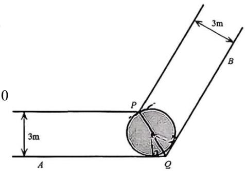
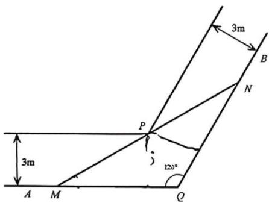
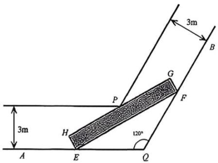

2026届上海高三一模 · 立体几何专题（教师版）
阶段性专题：按题型和方法组织，原题可在其他专题重复出现。本稿优先采用规范化原卷，未对全部原题或解析逐题重算。
目录
1 旋转体、球与多面体的面积和体积
嘉定 · 原卷第7题 规则难度（初评） ★★☆☆☆
考点说明 圆锥侧面积：将侧面展开为扇形，利用弧长等于底面周长求母线长。
来源：2026届上海高三一模嘉定卷，第7题。
圆锥的侧面展开图中扇形中心角为 2 π 3 \frac{2\pi}{3} 3 2 π 2 π 2\pi 2 π
展开答案与解析 【答案】 3 π 3\pi 3 π
【解析】
【分析】借助扇形弧长公司计算出圆锥母线长，结合扇形面积公式即可得圆锥侧面积.
【详解】设圆锥母线长为 l，扇形圆心角为 α \alpha α 2 π = 2 π 3 × l 2\pi = \frac{2\pi}{3} \times l 2 π = 3 2 π × l
则 S = 1 2 α l 2 = 1 2 × 2 π 3 × 3 2 = 3 π . S = \frac{1}{2}\alpha l^2 = \frac{1}{2}\times \frac{2\pi}{3}\times 3^2 = 3\pi . S = 2 1 α l 2 = 2 1 × 3 2 π × 3 2 = 3 π .
故答案为： 3 π 3\pi 3 π
核对说明：规范稿混入下一题概率解析，已在第二个答案标记前截断。
崇明 · 原卷第8题 规则难度（初评） ★★☆☆☆
考点说明 圆锥侧面积与体积：由侧面积求母线，再用勾股关系求高并计算体积。
来源：2026届上海高三一模崇明卷，第8题。
已知圆锥的底面半径为 1，侧面积为 2 π 2 \pi 2 π
展开答案与解析 【答案】 3 3 π \frac{\sqrt{3}}{3}\pi 3 3 π
【解析】
【分析】由圆锥的侧面积公式可求出母线长，再求出圆锥的高，由圆锥的体积公式即可得出答案.
【详解】设圆锥的高为 h = SO ，母线长为 l ，半径 r = 1 ，
因为圆锥的底面半径为 1，侧面积为 2 π 2\pi 2 π
所以 1 2 ⋅ 2 π ⋅ 1 ⋅ l = 2 π \frac{1}{2} \cdot 2\pi \cdot 1 \cdot l = 2\pi 2 1 ⋅ 2 π ⋅ 1 ⋅ l = 2 π l = 2 l = 2 l = 2
所以 h = l 2 − r 2 = 3 h=\sqrt{l^{2}-r^{2}}=\sqrt{3} h = l 2 − r 2 = 3
所以圆锥的体积是 V = 1 3 π × 1 2 ⋅ 3 = 3 3 π . V = \frac{1}{3}\pi \times 1^{2}\cdot \sqrt{3} = \frac{\sqrt{3}}{3}\pi . V = 3 1 π × 1 2 ⋅ 3 = 3 3 π .
故答案为： 3 3 π \frac{\sqrt{3}}{3}\pi 3 3 π
杨浦 · 原卷第6题 规则难度（初评） ★☆☆☆☆
考点说明 圆锥侧面积：由底面半径与高求母线长，再应用侧面积公式。
来源：2026届上海高三一模杨浦卷，第6题。
已知圆锥底面半径为 1，高为 3 \sqrt{3} 3
展开答案与解析 【答案】 2 π 2\pi 2 π
【解析】
【分析】由已知求得母线长，代入圆锥侧面积公式求解.
【详解】由已知可得 r = 1 , h = 3 r=1,\quad h=\sqrt{3} r = 1 , h = 3 1 = 1 + 3 = 2 1=\sqrt{1+3}=2 1 = 1 + 3 = 2
∴圆锥的侧面积 S = π r 1 = 2 π S=\pi r1=2\pi S = π r 1 = 2 π
故答案为 2 π 2\pi 2 π
【点睛】本题考查圆锥侧面积的求法, 侧面积公式 S= π r l \pi rl π r l
虹口 · 原卷第7题 规则难度（初评） ★★☆☆☆
考点说明 圆锥侧面积与体积：由底面半径和侧面积求母线，再由直角三角形求高。
来源：2026届上海高三一模虹口卷，第7题。
已知某圆锥的底面半径为 2, 侧面积为 6 π 6 \pi 6 π π \pi π
展开答案与解析 【答案】 4 5 π 3 \frac{4\sqrt{5}\pi}{3} 3 4 5 π
【解析】
【分析】根据圆锥体积公式、侧面积公式，结合圆锥的性质进行求解即可.
【详解】设圆锥的母线为 l l l 6 π 6\pi 6 π
所以 π ⋅ 2 ⋅ l = 6 π ⇒ l = 3 \pi\cdot2\cdot l=6\pi\Rightarrow l=3 π ⋅ 2 ⋅ l = 6 π ⇒ l = 3
所以该圆锥的高为 3 2 − 2 2 = 5 \sqrt{3^2 - 2^2} = \sqrt{5} 3 2 − 2 2 = 5
因此该圆锥的体积为 π 3 × 2 2 × 5 = 4 5 π 3 \frac{\pi}{3}\times2^{2}\times\sqrt{5}=\frac{4\sqrt{5}\pi}{3} 3 π × 2 2 × 5 = 3 4 5 π
故答案为： 4 5 π 3 \frac{4\sqrt{5}\pi}{3} 3 4 5 π
长宁 · 原卷第5题 规则难度（初评） ★☆☆☆☆
考点说明 圆锥侧面积：根据底面半径和母线长直接应用侧面积公式。
来源：2026届上海高三一模长宁卷，第5题。
如果圆锥的底面圆半径为 1，母线长为 2，则该圆锥的侧面积为 ____.
展开答案与解析 【答案】 2 π 2\pi 2 π
【解析】
【分析】由圆锥的侧面积公式即可求解.
【详解】由圆锥的侧面积公式 S = 1 2 l R = 1 2 × ( 2 π r ) × R = 1 2 × 2 π × 1 × 2 = 2 π . S=\frac{1}{2}lR=\frac{1}{2}\times(2\pi r)\times R=\frac{1}{2}\times2\pi\times1\times2=2\pi. S = 2 1 lR = 2 1 × ( 2 π r ) × R = 2 1 × 2 π × 1 × 2 = 2 π .
故答案为： 2 π 2\pi 2 π
金山 · 原卷第14题 规则难度（初评） ★☆☆☆☆
考点说明 棱锥的体积：由体积和高求正方形底面积，再求边长。
来源：2026届上海高三一模金山卷，第14题。
已知某正四棱锥的高为 2，体积为 24，则该正四棱锥的底面边长为（）
A. 9
B. 8
C. 6
D. 2 3 2\sqrt{3} 2 3
展开答案与解析 【答案】C
【解析】
【分析】设底面边长为 a a a
【详解】设底面边长为 a a a V = 1 3 × a 2 × 2 = 24 V = \frac{1}{3} \times a^2 \times 2 = 24 V = 3 1 × a 2 × 2 = 24 a = 6 a = 6 a = 6
核对说明：规范稿混入第15题题面与解析，已在本题首处“故选：C”后截断。
浦东 · 原卷第8题 规则难度（初评） ★★☆☆☆
考点说明 旋转体体积：将旋转所得几何体识别为两个同底圆锥，依据半径与高计算体积。
来源：2026届上海高三一模浦东卷，第8题。
如图, 等腰直角 △ A P B \triangle APB △ A PB A B AB A B 2 R 2R 2 R △ A P B \triangle APB △ A PB A B AB A B
展开答案与解析 【答案】 2 3 π R 3 \frac{2}{3}\pi R^3 3 2 π R 3
【解析】
【分析】旋转体为两个同底等高的圆锥的组合体，利用体积公式求解即可
【详解】由题意，将 △ A P B \triangle APB △ A PB A B AB A B R R R R R R
所以旋转体的体积为 V = 2 × 1 3 π R 2 ⋅ R = 2 3 π R 3 V = 2 \times \frac{1}{3} \pi R^2 \cdot R = \frac{2}{3} \pi R^3 V = 2 × 3 1 π R 2 ⋅ R = 3 2 π R 3
故答案为： 2 3 π R 3 \frac{2}{3}\pi R^3 3 2 π R 3
青浦 · 原卷第9题 规则难度（初评） ★★☆☆☆
考点说明 圆柱与圆锥：由侧面积相等建立母线与高的关系，再求圆锥体积。
来源：2026届上海高三一模青浦卷，第9题。
已知圆柱和圆锥的底面半径相同, 侧面积也相等, 且它们的高均为 2 \sqrt{2} 2
展开答案与解析 【答案】 2 2 π 2\sqrt{2}\pi 2 2 π
【解析】
【分析】设圆柱的底面半径为 r r r r r r
【详解】设圆柱的底面半径为 r r r r 2 + 2 \sqrt{r^2 + 2} r 2 + 2
圆柱和圆锥的侧面积相等，所以 2 π r ⋅ 2 = 1 2 ⋅ 2 π r ⋅ r 2 + 2 2\pi \mathrm{r}\cdot \sqrt{2} = \frac{1}{2}\cdot 2\pi \mathrm{r}\cdot \sqrt{r^2 + 2} 2 π r ⋅ 2 = 2 1 ⋅ 2 π r ⋅ r 2 + 2 2 2 = r 2 + 2 2\sqrt{2} = \sqrt{r^2 + 2} 2 2 = r 2 + 2 r = 6 r = \sqrt{6} r = 6
故圆锥的体积为 1 3 π r 2 ⋅ 2 = 1 3 π ⋅ 6 × 2 = 2 2 π . \frac{1}{3}\pi r^2\cdot \sqrt{2} = \frac{1}{3}\pi \cdot 6\times \sqrt{2} = 2\sqrt{2}\pi . 3 1 π r 2 ⋅ 2 = 3 1 π ⋅ 6 × 2 = 2 2 π .
故答案为： 2 2 π 2\sqrt{2}\pi 2 2 π
静安 · 原卷第7题 规则难度（初评） ★★☆☆☆
考点说明 圆柱与球的表面积和体积：利用相同半径及表面积建立高与半径的关系，求体积比。
来源：2026届上海高三一模静安卷，第7题。
已知圆柱的底面圆的半径与球的半径相等, 若圆柱的表面积与球的表面积也相等, 则圆柱的体积 V 1 V_{1} V 1 V 2 V_{2} V 2 V 1 : V 2 = V_{1}: V_{2} = V 1 : V 2 =
展开答案与解析 【答案】 3 4 \frac{3}{4} 4 3
【解析】
【分析】根据圆柱的侧面积公式和球的表面积公式得出半径等于圆柱的高，再根据体积公式化简即可.
【详解】设圆柱的底面圆和球的半径为 r，圆柱的高为 h，
则由题意得， 2 π r 2 + 2 π r h = 4 π r 2 2\pi r^{2} + 2\pi rh = 4\pi r^{2} 2 π r 2 + 2 π r h = 4 π r 2 h = r h = r h = r
则 V 1 V 2 = π r 2 h 4 3 π r 3 = 3 4 \frac{V_1}{V_2} = \frac{\pi r^2h}{\frac{4}{3}\pi r^3} = \frac{3}{4} V 2 V 1 = 3 4 π r 3 π r 2 h = 4 3
故答案为: 3 4 \frac{3}{4} 4 3
徐汇 · 原卷第8题 规则难度（初评） ★★☆☆☆
考点说明 正四棱柱外接球：根据球心、底面中心及顶点组成的直角三角形，联系球半径、底面边长与棱柱高。
来源：2026届上海高三一模徐汇卷，第8题。
一个底面积为1的正四棱柱的所有顶点都在同一球面上, 若该球的表面积为 4 π 4 \pi 4 π
展开答案与解析 【答案】 2 \sqrt{2} 2
【解析】
【分析】求出正四棱柱底边的边长以及外接球半径，分析可知该正四棱柱的外接球直径即为该正四棱柱的体对角线长，即可得解.
【详解】设该正四棱柱底边的边长为 a a a h h h a 2 = 1 a^2 = 1 a 2 = 1 a = 1 a = 1 a = 1
设该正四棱柱的外接球的半径为 R，则 4 π R 2 = 4 π 4\pi R^{2} = 4\pi 4 π R 2 = 4 π
由题意可知，该正四棱柱的外接球直径即为该正四棱柱的体对角线长，
即 2 R = a 2 + a 2 + h 2 = 2 + h 2 = 2 2R=\sqrt{a^{2}+a^{2}+h^{2}}=\sqrt{2+h^{2}}=2 2 R = a 2 + a 2 + h 2 = 2 + h 2 = 2 h = 2 h=\sqrt{2} h = 2
因此该正四棱柱的高为 2 \sqrt{2} 2
故答案为： 2 \sqrt{2} 2
黄浦 · 原卷第7题 规则难度（初评） ★★☆☆☆
考点说明 球的截面：用正三角形外接圆半径和球心到截面的距离求球半径，再求体积。
来源：2026届上海高三一模黄浦卷，第7题。
已知边长为 3 的正三角形 A B C ABC A BC O O O O O O A B C ABC A BC O O O
展开答案与解析 【答案】 32 π 3 \frac{32\pi}{3} 3 32 π
【解析】
【分析】由正弦定理求得正三角形 ABC 的外接圆半径，结合球心 O 到平面 ABC 的距离，根据勾股定理可求得球 O 的半径，从而求得球 O 的体积.
【详解】设正三角形 ABC 的外接圆半径为 r .
根据正弦定理可得， 2 r = 3 sin 6 0 ∘ = 2 3 2r = \frac{3}{\sin 60^{\circ}} = 2\sqrt{3} 2 r = s i n 6 0 ∘ 3 = 2 3 r = 3 r = \sqrt{3} r = 3
设球 O 的半径为 R，则 R 2 = r 2 + 1 2 = 4 R^{2}=r^{2}+1^{2}=4 R 2 = r 2 + 1 2 = 4
所以球 O 的体积为 4 3 π R 3 = 32 π 3 \frac{4}{3}\pi R^{3}=\frac{32\pi}{3} 3 4 π R 3 = 3 32 π
故答案为： 32 π 3 \frac{32\pi}{3} 3 32 π
松江 · 原卷第12题 规则难度（初评） ★★★☆☆
考点说明 三棱锥体积：由侧棱长度及夹角建立几何或坐标关系，确定底面积与高后求体积。
来源：2026届上海高三一模松江卷，第12题。
在三棱锥 P-ABC 中，PA=6，PB=8， P C = B C = 8 2 PC=BC=8\sqrt{2} PC = BC = 8 2 ∠ A P B = 6 0 ∘ \angle APB=60^{\circ} ∠ A PB = 6 0 ∘ ∠ A P C = 4 5 ∘ \angle APC=45^{\circ} ∠ A PC = 4 5 ∘
展开答案与解析 【答案】 32 3 32\sqrt{3} 32 3
【解析】
【分析】过 B B B B H ⊥ A P BH \perp AP B H ⊥ A P H H H H C HC H C C H ⊥ B H CH \perp BH C H ⊥ B H B H ⊥ BH \perp B H ⊥ P A C PAC P A C
【详解】如下图：过 B 作 B H ⊥ A P BH \perp AP B H ⊥ A P
因为 ∠ A P B = 6 0 ∘ \angle APB = 60^{\circ} ∠ A PB = 6 0 ∘ B H = B P sin ∠ A P B = 8 × 3 2 = 4 3 BH = BP\sin \angle APB = 8\times \frac{\sqrt{3}}{2} = 4\sqrt{3} B H = BP sin ∠ A PB = 8 × 2 3 = 4 3
P H = B P cos ∠ A P B = 8 × 2 2 = 4 ,
P H = B P \cos \angle A P B = 8 \times \frac {2}{2} = 4,
P H = BP cos ∠ A PB = 8 × 2 2 = 4 ,
在 △ P C H \triangle PCH △ PC H
C H 2 = P H 2 + P C 2 − 2 P H ⋅ P C ⋅ cos ∠ A P C = 16 + 128 − 2 × 4 × 8 2 × 2 2 = 80 ,
C H ^ {2} = P H ^ {2} + P C ^ {2} - 2 P H \cdot P C \cdot \cos \angle A P C = 1 6 + 1 2 8 - 2 \times 4 \times 8 \sqrt {2} \times \frac {\sqrt {2}}{2} = 8 0,
C H 2 = P H 2 + P C 2 − 2 P H ⋅ PC ⋅ cos ∠ A PC = 16 + 128 − 2 × 4 × 8 2 × 2 2 = 80 ,
则 C H = 80 = 4 5 CH = \sqrt{80} = 4\sqrt{5} C H = 80 = 4 5 C H 2 + B H 2 = B C 2 CH^2 + BH^2 = BC^2 C H 2 + B H 2 = B C 2 C H ⊥ B H CH \perp BH C H ⊥ B H
又 C H ∩ P A = H , C H , P A ⊂ CH \cap PA = H, CH, PA \subset C H ∩ P A = H , C H , P A ⊂ B H ⊥ BH \perp B H ⊥
故此三棱锥的体积为
V P − A B C = V B − P A C = 1 3 S △ P A C ⋅ B H = 1 3 × 1 2 × 6 × 8 2 × 2 2 × 4 3 = 32 3 .
V _ {P - A B C} = V _ {B - P A C} = \frac {1}{3} S _ {\triangle P A C} \cdot B H = \frac {1}{3} \times \frac {1}{2} \times 6 \times 8 \sqrt {2} \times \frac {\sqrt {2}}{2} \times 4 \sqrt {3} = 3 2 \sqrt {3}.
V P − A BC = V B − P A C = 3 1 S △ P A C ⋅ B H = 3 1 × 2 1 × 6 × 8 2 × 2 2 × 4 3 = 32 3 .
故答案为： 32 3 32\sqrt{3} 32 3
闵行 · 原卷第7题 规则难度（初评） ★★☆☆☆
考点说明 圆锥侧面展开：由轴截面的形状求底面半径与母线之比，再由扇形弧长确定圆心角。
来源：2026届上海高三一模闵行卷，第7题。
若圆锥的轴截面为等腰直角三角形，则其侧面展开图扇形圆心角的弧度数为________。
展开答案与解析 【答案】2 π \sqrt2\pi 2 π
【解析·参考原解整理】
设底面半径为 r r r 2 r \sqrt2r 2 r 2 r θ = 2 π r \sqrt2r\theta=2\pi r 2 r θ = 2 π r θ = 2 π \theta=\sqrt2\pi θ = 2 π
回源核对说明：逐题对照该PDF题面页面视觉核对；答案转录自第7或12页，非独立数学复核。
2 空间线面位置关系与命题判断
奉贤 · 原卷第14题 规则难度（初评） ★★☆☆☆
考点说明 空间线面位置关系：运用线面平行、垂直及面面关系的判定，并注意用反例排除错误命题。
来源：2026届上海高三一模奉贤卷，第14题。
设 α \alpha α β \beta β γ \gamma γ m ∥ α m \parallel \alpha m ∥ α m ∥ β m \parallel \beta m ∥ β α ∥ β \alpha \parallel \beta α ∥ β α ⊥ γ \alpha \perp \gamma α ⊥ γ β ⊥ γ \beta \perp \gamma β ⊥ γ α ⊥ β \alpha \perp \beta α ⊥ β
③若 m ⊥ α , m ⊥ β m \perp \alpha, m \perp \beta m ⊥ α , m ⊥ β α / / β \alpha // \beta α // β m / / α , n ⊥ α m // \alpha, n \perp \alpha m // α , n ⊥ α m ⊥ n m \perp n m ⊥ n
展开答案与解析 【答案】B
【解析】
【分析】根据线面位置关系的判定定理、性质定理，以及推论，逐项判定，即可求解.
【详解】由 α , β , γ \alpha, \beta, \gamma α , β , γ m / / α , m / / β m//\alpha, m//\beta m // α , m // β α / / β \alpha//\beta α // β α \alpha α β \beta β α ⊥ γ , β ⊥ γ \alpha \perp \gamma, \beta \perp \gamma α ⊥ γ , β ⊥ γ α ⊥ β \alpha \perp \beta α ⊥ β α / / β \alpha // \beta α // β α \alpha α β \beta β m ⊥ α , m ⊥ β m \perp \alpha, m \perp \beta m ⊥ α , m ⊥ β α / / β \alpha // \beta α // β m / / α , n ⊥ α m//\alpha, n \perp \alpha m // α , n ⊥ α m ⊥ n m \perp n m ⊥ n
故选：B.
普陀 · 原卷第14题 规则难度（初评） ★★☆☆☆
考点说明 空间线面位置关系：运用平面平行、线面垂直等性质，结合空间反例判断命题。
来源：2026届上海高三一模普陀卷，第14题。
已知直线 m m m l l l α \alpha α β \beta β l ⊂ α l \subset \alpha l ⊂ α α / / β \alpha // \beta α // β
A. 若 m / / β m // \beta m // β m / / l m // l m // l
B. 若 m / / l m // l m // l m / / α m // \alpha m // α
C. 若 m ⊥ β m \perp \beta m ⊥ β m ⊥ l m \perp l m ⊥ l
D. 若 m ⊥ l m \perp l m ⊥ l m ⊥ α m \perp \alpha m ⊥ α
展开答案与解析 【答案】C
【解析】
【分析】由空间线面、线线位置关系逐项判断即可.
【详解】由 l ⊂ α , α ∥ β l\subset\alpha,\quad\alpha\parallel\beta l ⊂ α , α ∥ β l ∥ β l\parallel\beta l ∥ β
对于 A， m / / β m // \beta m // β l ∥ β l \parallel \beta l ∥ β
对于 B，若 m ∥ l m \parallel l m ∥ l m ∥ α m \parallel \alpha m ∥ α m ⊂ α m \subset \alpha m ⊂ α
对于 C，因为 m ⊥ β m \perp \beta m ⊥ β α ∥ β \alpha \parallel \beta α ∥ β m ⊥ α m \perp \alpha m ⊥ α l ⊂ α l \subset \alpha l ⊂ α
所以 m ⊥ l m \perp l m ⊥ l
对于 D，要证明 m ⊥ α m \perp \alpha m ⊥ α α \alpha α m ⊥ l m \perp l m ⊥ l
故错误；
故选：C
杨浦 · 原卷第14题 规则难度（初评） ★★☆☆☆
考点说明 空间线面位置关系：识别面面垂直的判定条件，并用平行、相交等情形排除错误命题。
来源：2026届上海高三一模杨浦卷，第14题。
若 m, n 为两条不同直线， α , β \alpha, \beta α , β
A. 若 m / / α m // \alpha m // α n ⊂ α n \subset \alpha n ⊂ α m / / n m // n m // n
B. 若 m / / n m // n m // n n ⊂ α n \subset \alpha n ⊂ α m / / α m // \alpha m // α
C. 若 m ⊂ α m \subset \alpha m ⊂ α m ⊥ β m \perp \beta m ⊥ β α ⊥ β \alpha \perp \beta α ⊥ β
D. 若 m ⊂ α m \subset \alpha m ⊂ α α ⊥ β \alpha \perp \beta α ⊥ β m ⊥ β m \perp \beta m ⊥ β
展开答案与解析 【答案】C
【解析】
【分析】利用线面平行的判定定理和性质定理可判断 AB，利用面面垂直的判定定理和性质定理可判断 CD.
【详解】若 m / / α m // \alpha m // α n ⊂ α n \subset \alpha n ⊂ α m / / n m // n m // n
若 m / / n m / / n m // n n ⊂ α n\subset \alpha n ⊂ α m / / α m / / \alpha m // α m ⊂ α m\subset \alpha m ⊂ α
若 m ⊂ α m \subset \alpha m ⊂ α m ⊥ β m \perp \beta m ⊥ β α ⊥ β \alpha \perp \beta α ⊥ β m ⊂ α m \subset \alpha m ⊂ α α ⊥ β \alpha \perp \beta α ⊥ β α ∩ β = l , m ⊥ l \alpha \cap \beta = l, m \perp l α ∩ β = l , m ⊥ l m ⊥ β m \perp \beta m ⊥ β
松江 · 原卷第13题 规则难度（初评） ★★☆☆☆
考点说明 空间线线关系与充分必要条件：结合直线互相垂直、平行及三线共面逐向判断，注意不同直线的空间位置。
来源：2026届上海高三一模松江卷，第13题。
若空间中三条不同的直线 a , b , c a, b, c a , b , c a ⊥ c , b ⊥ c a \perp c, b \perp c a ⊥ c , b ⊥ c a / / b a // b a // b a , b , c a, b, c a , b , c
A. 充分不必要条件
B. 必要不充分条件
C. 充要条件
D. 既不充分也不必要条件
展开答案与解析 【答案】B
【解析】
【分析】通过特例说明 a / / b a / / b a // b a , b , c a, b, c a , b , c a / / b a / / b a // b
即可得出结果.
【详解】
如图所示：满足 a ⊥ c a \perp c a ⊥ c b ⊥ c b \perp c b ⊥ c a / / b a // b a // b a ⊂ α , b ⊂ α , c ⊂ β a \subset \alpha, b \subset \alpha, c \subset \beta a ⊂ α , b ⊂ α , c ⊂ β
所以可知 a // b 是 a，b，c 共面的不充分条件；
当 a , b , c a, b, c a , b , c
又因为 a ⊥ c a \perp c a ⊥ c b ⊥ c b \perp c b ⊥ c a / / b a // b a // b
即 a / / b a / / b a // b a , b , c a, b, c a , b , c
综上可知 a // b 是 a, b, c 共面的必要不充分条件.
故选：B.
浦东 · 原卷第13题 规则难度（初评） 暂无法评级
教师复核提醒：原卷未明确两个平面是否不同；标答C依赖不同平面约定，若允许重合则为B。
考点说明 空间位置与充分必要条件：分别分析线线相交与面面相交的推出关系；若允许两个平面重合，结论会改变，原题应明确约定。
来源：2026届上海高三一模浦东卷，第13题。
已知直线 a , b a,b a , b α , β \alpha,\beta α , β a ⊆ α a\subseteq\alpha a ⊆ α b ⊆ β b\subseteq\beta b ⊆ β a a a b b b α \alpha α β \beta β
A. 充分必要条件
B. 既不充分又不必要条件
C. 充分不必要条件
D. 必要不充分条件
展开答案与解析 【答案】整理卷标答为C（按两个不同平面理解）；若允许两平面重合，则为B。
【解析·参考原解整理】
以下保留源解析，前提是两个平面不同；原题未显式给出此前提。
【分析】根据直线与平面的位置关系判断.
【详解】直线 a 、 b 和平面 α \alpha α β \beta β a ⊆ α a \subseteq \alpha a ⊆ α b ⊆ β b \subseteq \beta b ⊆ β
若 a a a b b b a ∩ b = O a \cap b = O a ∩ b = O a ⊆ α a \subseteq \alpha a ⊆ α b ⊆ β b \subseteq \beta b ⊆ β
所以 O ∈ α O \in \alpha O ∈ α O ∈ β O \in \beta O ∈ β α \alpha α β \beta β
所以 “a 与 b 相交” 能得到 α \alpha α β \beta β
但 “ α \alpha α β \beta β
平面 ABCD 为 α \alpha α β \beta β α ∩ β = A B \alpha \cap \beta = AB α ∩ β = A B
a ⊆ α , b ⊆ β , a ∩ A B = P , b ∩ A B = Q ,
a \subseteq \alpha , b \subseteq \beta , a \cap A B = P, b \cap A B = Q,
a ⊆ α , b ⊆ β , a ∩ A B = P , b ∩ A B = Q ,
若 P P P Q Q Q a a a b b b α \alpha α β \beta β
【约定边界】若允许两平面重合，取同一平面内两条相交直线，不能推出两平面相交，充分性失效；必要性也不成立，此时选B。
回源核对说明：这不是转录缺字。原文没有明确排除两平面重合；整理卷标答C依赖不同平面的约定，需在教师版说明，不能静默添加原题条件。
回源核对说明：已视觉核对原始扫描卷第2页，与署名整理卷第2页一致；原文未写两个不同平面或不重合。
长宁 · 原卷第13题 规则难度（初评） ★★☆☆☆
考点说明 正方体中的异面直线：依据是否共面、相交或平行判断指定棱中点连线的位置关系。
来源：2026届上海高三一模长宁卷，第13题。
如图, 已知 A 、 B 、 C 、 D 、 E 、 F 、 G A 、 B 、 C 、 D 、 E 、 F 、 G A 、 B 、 C 、 D 、 E 、 F 、 G E F E F EF
A. 直线 A B AB A B
B. 直线 A C AC A C
C. 直线 A D AD A D
D. 直线 A G AG A G
展开答案与解析 【答案】BD
【解析】
【分析】本题考查正方体的结构特征，利用异面直线的判断法若 a ⊂ α , A B ∩ α = B , A ∉ α , B ∉ a a \subset \alpha, AB \cap \alpha = B, A \notin \alpha, B \notin a a ⊂ α , A B ∩ α = B , A ∈ / α , B ∈ / a A B AB A B a a a
【详解】如图取中点 H, 和顶点 M, N, P, Q 连接 EF, AB, AC, AD, AG, BE, AF, GH, MN, PQ在正方体中有 A F / / P Q , P Q / / B E AF // PQ, PQ // BE A F // PQ , PQ // BE A F / / B E AF // BE A F // BE A , B , E , F A, B, E, F A , B , E , F E F EF EF A B AB A B G H ⊂ GH \subset G H ⊂ B C G BCG BCG A C ∩ AC \cap A C ∩ B C G = C , C ∉ G H BCG = C, C \notin GH BCG = C , C ∈ / G H G H GH G H A C AC A C E F / / G H EF // GH EF // G H E F EF EF A C AC A C E F / / M N , M N / / A D EF // MN, MN // AD EF // MN , MN // A D E F / / A D EF // AD EF // A D A G ⊂ AG \subset A G ⊂ A F G AFG A FG E F ∩ EF \cap EF ∩ A F G = F , F ∉ A G AFG = F, F \notin AG A FG = F , F ∈ / A G A G AG A G E F EF EF
A. 充分不必要条件
B. 必要不充分条件
C. 充要条件
D. 既不充分也不必要条件
【解析】
【分析】由独立事件概率公式和充要条件的概念即可求解.
【详解】由甲、乙两人投篮的命中率分别为 0.7 和 0.6，
若“事件 A , B A, B A , B P ( A B ) = P ( A ) P ( B ) = 0.42 P(AB) = P(A)P(B) = 0.42 P ( A B ) = P ( A ) P ( B ) = 0.42 P ( A B ) = 0.42 = P ( A ) P ( B ) P(AB) = 0.42 = P(A)P(B) P ( A B ) = 0.42 = P ( A ) P ( B ) A , B A, B A , B A , B A, B A , B
青浦 · 原卷第13题 规则难度（初评） ★☆☆☆☆
考点说明 空间直线位置与充分必要条件：区分平行和异面直线，判断没有公共点的逆命题。
来源：2026届上海高三一模青浦卷，第13题。
在空间中，“两条直线平行”是“这两条直线没有公共点”的（）
A. 充分非必要条件
B. 必要非充分条件
C. 充要条件
D. 既非充分也非必要
展开答案与解析 【答案】A
【解析】
【分析】直接由平行直线及异面直线的定义判断充分性及必要性即可.
【详解】“两条直线平行”能推出“这两条直线没有公共点”，满足充分性；“两条直线没有公共点”不能推出“两条直线平行”，
两条直线可能异面，不满足必要性，故“两条直线平行”是“这两条直线没有公共点”的充分非必要条件.
故选：A.
静安 · 原卷第13题 规则难度（初评） ★★☆☆☆
考点说明 空间线面关系：依据线面垂直及平行性质判断命题，注意空间情形与平面直觉的区别。
来源：2026届上海高三一模静安卷，第13题。
在三维空间中，下列命题是真命题的一个是（ ）
A. 垂直于同一条直线的两条直线平行
B. 垂直于同一个平面的两个平面平行
C. 若一条直线垂直于一个平面，另一条直线与这个平面平行，则这两条直线互相垂直
D. 若两个平面分别平行于两条互相垂直的直线，则这两个平面互相垂直
展开答案与解析 【答案】C
【解析】
【分析】ABD 在正方体中找反例；C 利用线面线面平行的性质定理、线面垂直的性质定理
可判断.
【详解】如图为正方体，
A A 1 ⊥ A D , A B ⊥ A D AA_{1} \perp AD, AB \perp AD A A 1 ⊥ A D , A B ⊥ A D A A 1 ⊥ A B AA_{1} \perp AB A A 1 ⊥ A B A D D 1 A 1 ⊥ ADD_{1}A_{1} \perp A D D 1 A 1 ⊥ A B B 1 A 1 ⊥ ABB_{1}A_{1} \perp A B B 1 A 1 ⊥ A D D 1 A 1 ⊥ ADD_{1}A_{1} \perp A D D 1 A 1 ⊥ A B B 1 A 1 ABB_{1}A_{1} A B B 1 A 1
m ⊥ α , n / / α m \perp \alpha, n // \alpha m ⊥ α , n // α α \alpha α l l l n n n m ⊥ l m \perp l m ⊥ l m ⊥ n m \perp n m ⊥ n
黄浦 · 原卷第14题 规则难度（初评） ★★☆☆☆
考点说明 空间线面关系：运用面面平行与线面垂直的性质，注意区分直线在平面内与平行于平面。
来源：2026届上海高三一模黄浦卷，第14题。
设 α \alpha α β \beta β l l l
A. 若 l ⊥ α , α ⊥ β l \perp \alpha, \alpha \perp \beta l ⊥ α , α ⊥ β l ∥ β l \parallel \beta l ∥ β
B. 若 l ∥ α , α ∥ β l \parallel \alpha, \alpha \parallel \beta l ∥ α , α ∥ β l ∥ β l \parallel \beta l ∥ β
C. 若 l ⊥ α , α ∥ β l \perp \alpha, \alpha \parallel \beta l ⊥ α , α ∥ β l ⊥ β l \perp \beta l ⊥ β
D. 若 l ∥ α , α ⊥ β l \parallel \alpha, \alpha \perp \beta l ∥ α , α ⊥ β l ⊥ β l \perp \beta l ⊥ β
展开答案与解析 【答案】C
【解析】
【分析】根据空间线面平行、线面垂直、面面平行和面面垂直的判定与性质，对四个选项逐个加以判断，可得正确答案.
【详解】若 l ⊥ α l \perp \alpha l ⊥ α β ⊥ α \beta \perp \alpha β ⊥ α l ∥ β l \parallel \beta l ∥ β l ⊂ β l \subset \beta l ⊂ β
若 l ∥ α l\|\alpha l ∥ α α ∥ β \alpha\parallel\beta α ∥ β l ∥ β l\parallel\beta l ∥ β l ⊂ β l\subset\beta l ⊂ β
若 α / / β \alpha//\beta α // β α \alpha α β \beta β m ′ m' m ′ n ′ n' n ′ l ⊥ α l \perp \alpha l ⊥ α
则 l ⊥ m l \perp m l ⊥ m l ⊥ n l \perp n l ⊥ n l ⊥ m ′ l \perp m' l ⊥ m ′ l ⊥ n ′ l \perp n' l ⊥ n ′ l ⊥ β l \perp \beta l ⊥ β
若 l ∥ α l\| \alpha l ∥ α α ⊥ β \alpha \perp \beta α ⊥ β l l l β \beta β l / / β l / / \beta l // β l ⊂ β l\subset \beta l ⊂ β
【点睛】本题主要考查空间中点、线、面的位置关系，解决此类问题的关键是熟练掌握空间中直线与平面的位置关系（平行关系与垂直关系），属于基础题.
核对说明：黄浦同题解析版PDF第7—8页核对，直线符号应为字母l，已更正题面和选项中的数字1误识。
3 异面直线角、线面角与二面角
奉贤 · 原卷第7题 规则难度（初评） ★★☆☆☆
考点说明 正四棱台与异面直线角：利用正四棱台的对称性和平移，将空间夹角转化为平面角。
来源：2026届上海高三一模奉贤卷，第7题。
在正四棱台 A B C D − A 1 B 1 C 1 D 1 ABCD - A_{1}B_{1}C_{1}D_{1} A BC D − A 1 B 1 C 1 D 1 A A 1 AA_{1} A A 1 D 1 B 1 D_{1}B_{1} D 1 B 1
展开答案与解析 【答案】 π 2 \frac{\pi}{2} 2 π
【解析】
【分析】根据正四棱台特征得出 O O 1 ⊥ OO_{1} \perp O O 1 ⊥ A 1 B 1 C 1 D 1 A_{1}B_{1}C_{1}D_{1} A 1 B 1 C 1 D 1 B 1 D 1 ⊥ B_{1}D_{1} \perp B 1 D 1 ⊥ A 1 C 1 C A A_{1}C_{1}CA A 1 C 1 C A
【详解】
取 AC 中点 O，取 A 1 C 1 A_{1}C_{1} A 1 C 1 O 1 O_{1} O 1 O O 1 , B 1 D 1 OO_{1}, B_{1}D_{1} O O 1 , B 1 D 1
因为四棱台 A B C D − A 1 B 1 C 1 D 1 ABCD-A_{1}B_{1}C_{1}D_{1} A BC D − A 1 B 1 C 1 D 1
所以 O O 1 ⊥ OO_{1}\perp O O 1 ⊥ A 1 B 1 C 1 D 1 A_{1}B_{1}C_{1}D_{1} A 1 B 1 C 1 D 1 B 1 D 1 ⊂ B_{1}D_{1}\subset B 1 D 1 ⊂ A 1 B 1 C 1 D 1 A_{1}B_{1}C_{1}D_{1} A 1 B 1 C 1 D 1
所以 O O 1 ⊥ B 1 D 1 OO_{1} \perp B_{1}D_{1} O O 1 ⊥ B 1 D 1
又因为 A 1 B 1 C 1 D 1 A_{1}B_{1}C_{1}D_{1} A 1 B 1 C 1 D 1 A 1 C 1 ⊥ B 1 D 1 A_{1}C_{1} \perp B_{1}D_{1} A 1 C 1 ⊥ B 1 D 1
且 A 1 C 1 ∩ O O 1 = O 1 , A 1 C 1 , O O 1 ⊂ A_{1}C_{1}\cap OO_{1} = O_{1},A_{1}C_{1},OO_{1}\subset A 1 C 1 ∩ O O 1 = O 1 , A 1 C 1 , O O 1 ⊂ A 1 C 1 C A A_{1}C_{1}CA A 1 C 1 C A B 1 D 1 ⊥ B_{1}D_{1}\bot B 1 D 1 ⊥ A 1 C 1 C A A_{1}C_{1}CA A 1 C 1 C A
A A 1 ⊂ AA_{1}\subset A A 1 ⊂ A 1 C 1 C A A_{1}C_{1}CA A 1 C 1 C A A A 1 ⊥ B 1 D 1 AA_{1}\perp B_{1}D_{1} A A 1 ⊥ B 1 D 1
所以异面直线 A A 1 AA_{1} A A 1 D 1 B 1 D_{1}B_{1} D 1 B 1 π 2 \frac{\pi}{2} 2 π
故答案为： π 2 \frac{\pi}{2} 2 π
宝山 · 原卷第11题 规则难度（初评） ★★★☆☆
考点说明 异面直线所成的角：根据圆柱底面几何及线面角确定空间长度，平移或用向量求夹角。
来源：2026届上海高三一模宝山卷，第11题。
如图, 点 P P P O 1 O O_{1} O O 1 O O O O A B A B A B O O O
∠ A O P = 12 0 ∘ , O A = 3 , A 1 B \angle AOP = 120^{\circ}, OA = 3, A_{1}B ∠ A OP = 12 0 ∘ , O A = 3 , A 1 B O O O 3 0 ∘ 30^{\circ} 3 0 ∘ A 1 B A_{1}B A 1 B A P AP A P
展开答案与解析 【答案】 3 4 \frac{3}{4} 4 3
【解析】
【分析】根据异面直线所成角的定义，结合线面角的定义、圆的性质、余弦定理进行求解即可.
【详解】在圆O内，延长OP交圆O上一点Q，连接QB, A 1 Q A_{1}Q A 1 Q
因为 AB, PQ 是圆 O 的直径,
所以 Q B / / A P , Q B = A P QB // AP, QB = AP QB // A P , QB = A P ∠ A 1 B Q \angle A_{1}BQ ∠ A 1 BQ A 1 B A_{1}B A 1 B A P AP A P
在圆 O 中，因为 ∠ A O P = 12 0 ∘ , O A = 3 \angle AOP = 120^{\circ}, OA = 3 ∠ A OP = 12 0 ∘ , O A = 3
所以 Q B = A P = 3 2 + 3 2 − 2 × 3 × 3 × ( − 1 2 ) = 3 3 QB = AP = \sqrt{3^2 + 3^2 - 2 \times 3 \times 3 \times \left(-\frac{1}{2}\right)} = 3\sqrt{3} QB = A P = 3 2 + 3 2 − 2 × 3 × 3 × ( − 2 1 ) = 3 3
由圆柱的性质可知： A A 1 AA_{1} A A 1 A 1 B A_{1}B A 1 B 3 0 ∘ 30^{\circ} 3 0 ∘
所以 ∠ A 1 B A = 3 0 ∘ \angle A_{1}BA = 30^{\circ} ∠ A 1 B A = 3 0 ∘
因此有 cos ∠ A 1 B A = cos 3 0 ∘ = A B A 1 B ⇒ A 1 B = 6 3 2 = 4 3 \cos\angle A_{1}BA=\cos30^{\circ}=\frac{AB}{A_{1}B}\Rightarrow A_{1}B=\frac{6}{\frac{\sqrt{3}}{2}}=4\sqrt{3} cos ∠ A 1 B A = cos 3 0 ∘ = A 1 B A B ⇒ A 1 B = 2 3 6 = 4 3
tan ∠ A 1 B A = tan 3 0 ∘ = A A 1 A B ⇒ A 1 A = 6 × 3 3 = 2 3 , \tan \angle A_{1}BA = \tan 30^{\circ} = \frac{AA_{1}}{AB}\Rightarrow A_{1}A = 6\times \frac{\sqrt{3}}{3} = 2\sqrt{3}, tan ∠ A 1 B A = tan 3 0 ∘ = A B A A 1 ⇒ A 1 A = 6 × 3 3 = 2 3 ,
因为 ∠ A O P = 12 0 ∘ , O A = 3 \angle AOP = 120^{\circ}, OA = 3 ∠ A OP = 12 0 ∘ , O A = 3
所以 ∠ A O Q = 18 0 ∘ − 12 0 ∘ = 6 0 ∘ , O A = 3 \angle AOQ = 180^{\circ} - 120^{\circ} = 60^{\circ}, OA = 3 ∠ A OQ = 18 0 ∘ − 12 0 ∘ = 6 0 ∘ , O A = 3
所以 AQ = 3，
因为 A A 1 ⊥ AA_{1} \perp A A 1 ⊥ A Q ⊂ AQ \subset A Q ⊂
所以 A A 1 ⊥ A Q AA_{1} \perp AQ A A 1 ⊥ A Q
因此 A 1 Q = A 1 A 2 + A Q 2 = 12 + 9 = 21 A_{1}Q = \sqrt{A_{1}A^{2} + AQ^{2}} = \sqrt{12 + 9} = \sqrt{21} A 1 Q = A 1 A 2 + A Q 2 = 12 + 9 = 21
在 △ A 1 Q B \triangle A_{1}QB △ A 1 QB
cos ∠ A 1 B Q = B Q 2 + A 1 B 2 − A 1 Q 2 2 B Q ⋅ A 1 B = 27 + 48 − 21 2 × 3 3 × 4 3 = 3 4 ,
\cos \angle A _ {1} B Q = \frac {B Q ^ {2} + A _ {1} B ^ {2} - A _ {1} Q ^ {2}}{2 B Q \cdot A _ {1} B} = \frac {2 7 + 4 8 - 2 1}{2 \times 3 \sqrt {3} \times 4 \sqrt {3}} = \frac {3}{4},
cos ∠ A 1 BQ = 2 BQ ⋅ A 1 B B Q 2 + A 1 B 2 − A 1 Q 2 = 2 × 3 3 × 4 3 27 + 48 − 21 = 4 3 ,
故答案为： 3 4 \frac{3}{4} 4 3
普陀 · 原卷第8题 规则难度（初评） ★★★☆☆
考点说明 折叠几何中的线面角：利用两平面垂直确定垂线及斜线的射影，结合三角关系求角。
来源：2026届上海高三一模普陀卷，第8题。
在 △ A B C \triangle ABC △ A BC A = π 3 A = \frac{\pi}{3} A = 3 π A B = 2 AB = 2 A B = 2 A C = 5 AC = 5 A C = 5 D D D A C AC A C A D = 2 AD = 2 A D = 2 △ A B D \triangle ABD △ A B D B D BD B D A A A P P P P B D ⊥ PBD \perp PB D ⊥ B D C BDC B D C P C PC PC B D C BDC B D C
展开答案与解析 【答案】 3 4 \frac{\sqrt{3}}{4} 4 3
【解析】
【分析】由 A、AB、AD 得到 △ A B D \triangle ABD △ A B D A H ⊥ B D , B O ⊥ A D AH \perp BD, BO \perp AD A H ⊥ B D , BO ⊥ A D P H ⊥ B D PH \perp BD P H ⊥ B D P B D ⊥ PBD \perp PB D ⊥ P H ⊥ PH \perp P H ⊥ P C → \overrightarrow{PC} PC n ⃗ \vec{n} n α \alpha α sin α = ∣ cos ⟨ P C → , n ⃗ ⟩ ∣ \sin \alpha = \left| \cos \left\langle \overrightarrow{PC}, \vec{n} \right\rangle \right| sin α = cos ⟨ PC , n ⟩
【详解】∵ A = π 3 A=\frac{\pi}{3} A = 3 π
取 AD 的中点 O，BD 的中点 H，连接 AH, BO，则 A H ⊥ B D , B O ⊥ A D AH \perp BD, BO \perp AD A H ⊥ B D , BO ⊥ A D △ A B D \triangle ABD △ A B D B D BD B D A A A P P P P H ⊥ B D PH \perp BD P H ⊥ B D ∵ \because ∵ P B D ⊥ PBD \perp PB D ⊥ B D C BDC B D C P B D ∩ PBD \cap PB D ∩ B D C = B D BDC = BD B D C = B D P H ⊥ B D PH \perp BD P H ⊥ B D ∴ P H ⊥ \therefore PH \perp ∴ P H ⊥ B D C BDC B D C
过 O 作 PH 的平行线作为 z 轴，以 O 为原点，OB 为 x 轴，OD 为 y 轴，建立空间直角坐标系，如图所示，
∵△ABD为等边三角形，AB=2，∴AH= 3 \sqrt{3} 3 3 \sqrt{3} 3
∵ A C = 5 , ∴ O D = 1 , O C = 4
\because A C = 5, \therefore O D = 1, O C = 4
∵ A C = 5 , ∴ O D = 1 , OC = 4
∴ D ( 0 , 1 , 0 ) , B ( 3 , 0 , 0 ) , C ( 0 , 4 , 0 ) , H ( 3 2 , 1 2 , 0 ) , P ( 3 2 , 1 2 , 3 ) \therefore D(0,1,0), B(\sqrt{3},0,0), C(0,4,0), H(\frac{\sqrt{3}}{2}, \frac{1}{2}, 0), P(\frac{\sqrt{3}}{2}, \frac{1}{2}, \sqrt{3}) ∴ D ( 0 , 1 , 0 ) , B ( 3 , 0 , 0 ) , C ( 0 , 4 , 0 ) , H ( 2 3 , 2 1 , 0 ) , P ( 2 3 , 2 1 , 3 )
∴ P C → = ( − 3 2 , 7 2 , − 3 ) , ∴ ∣ P C → ∣ = 4 \therefore \overrightarrow{PC} = (-\frac{\sqrt{3}}{2}, \frac{7}{2}, -\sqrt{3}), \therefore |\overrightarrow{PC}| = 4 ∴ PC = ( − 2 3 , 2 7 , − 3 ) , ∴ ∣ PC ∣ = 4
∵平面 BDC 的法向量为 n ⃗ = ( 0 , 0 , 1 ) \vec{n}=(0,0,1) n = ( 0 , 0 , 1 ) ∣ n ⃗ ∣ = 1 |\vec{n}|=1 ∣ n ∣ = 1
设直线 P C PC PC B D C BDC B D C α \alpha α
sin α = ∣ cos ⟨ P C → , n ⃗ ⟩ ∣ = ∣ P C → ⋅ n ⃗ ∣ ∣ P C → ∣ ⋅ ∣ n ⃗ ∣ = 3 4
\sin \alpha = \left| \cos \left\langle \overrightarrow {P C}, \vec {n} \right\rangle \right| = \frac {\left| \overrightarrow {P C} \cdot \vec {n} \right|}{\left| \overrightarrow {P C} \right| \cdot | \vec {n} |} = \frac {\sqrt {3}}{4}
sin α = cos ⟨ PC , n ⟩ = PC ⋅ ∣ n ∣ PC ⋅ n = 4 3
故直线 P C PC PC B D C BDC B D C 3 4 \frac{\sqrt{3}}{4} 4 3
虹口 · 原卷第15题 规则难度（初评） ★★★★☆
考点说明 球面与二面角：由球半径和垂直关系建立空间截面，结合二面角逐项判断角与面积。
来源：2026届上海高三一模虹口卷，第15题。
如图，已知点 A , B , C , D A, B, C, D A , B , C , D 12 π 12\pi 12 π O O O O ∈ B D O \in BD O ∈ B D O A ⊥ OA \perp O A ⊥ B C D BCD BC D E E E B C BC BC A − B C − D A - BC - D A − BC − D π 3 \frac{\pi}{3} 3 π
A. 异面直线 A E AE A E C D CD C D π 6 \frac{\pi}{6} 6 π
B. 直线 E A EA E A A B D ABD A B D π 6 \frac{\pi}{6} 6 π
C. sin ( 2 ∠ A B E ) = 2 3 \sin (2\angle ABE) = \frac{\sqrt{2}}{3} sin ( 2∠ A BE ) = 3 2
D. △ B E D \triangle BED △ BE D 2 \sqrt{2} 2
展开答案与解析 【答案】D
【解析】
【分析】设球 O 的半径为 r，求得 r = 3 r = \sqrt{3} r = 3 B C ⊥ BC \perp BC ⊥ B C ⊥ A E BC \perp AE BC ⊥ A E ∠ A E O = π 3 \angle AEO = \frac{\pi}{3} ∠ A EO = 3 π E F ⊥ B D EF \perp BD EF ⊥ B D E F ⊥ EF \perp EF ⊥ ∠ E A F \angle EAF ∠ E A F △ A B E \triangle ABE △ A BE sin ∠ A B E 2 6 \sin \angle ABE \frac{2}{\sqrt{6}} sin ∠ A BE 6 2
结合二倍角公式，可得判定 C 不正确；结合面积公式，可判定 D 正确.
【详解】设球 O 的半径为 r，因为球的表面积为 12 π 12\pi 12 π 4 π r 2 = 12 π 4\pi r^{2} = 12\pi 4 π r 2 = 12 π r = 3 r = \sqrt{3} r = 3
因为O和E分别为BD,BC的中点，所以OE//CD，所以OE⊥BC，
又因为 O A ⊥ OA \perp O A ⊥ B C ⊂ BC \subset BC ⊂ B C ⊥ O A BC \perp OA BC ⊥ O A
因为 O A ∩ O E = O OA \cap OE = O O A ∩ OE = O O A , O E ⊂ OA, OE \subset O A , OE ⊂ B C ⊥ BC \perp BC ⊥
又因为 A E ⊂ AE \subset A E ⊂ B C ⊥ A E BC \perp AE BC ⊥ A E
所以 ∠ A E O \angle AEO ∠ A EO ∠ A E O = π 3 \angle AEO = \frac{\pi}{3} ∠ A EO = 3 π
在直角 △ A O E \triangle AOE △ A OE A E = A O sin ∠ A E O = 2 , O E = A O tan ∠ A E O = 1 AE = \frac{AO}{\sin\angle AEO} = 2, OE = \frac{AO}{\tan\angle AEO} = 1 A E = s i n ∠ A EO A O = 2 , OE = t a n ∠ A EO A O = 1
对于 A，由 OE // CD，可得异面直线 AE 和 CD 所成角，即为直线 AE 和 OE 所成角，
因为 ∠ A E O = π 3 \angle AEO = \frac{\pi}{3} ∠ A EO = 3 π A E AE A E C D CD C D π 3 \frac{\pi}{3} 3 π
对于 B，过点 E 作 E F ⊥ B D EF \perp BD EF ⊥ B D
因为 O A ⊥ OA \perp O A ⊥ B C D BCD BC D E F ⊂ EF \subset EF ⊂ B C D BCD BC D E F ⊥ O A EF \perp OA EF ⊥ O A
又因为 O A ∩ B D = O OA \cap BD = O O A ∩ B D = O O A , B D ⊂ OA, BD \subset O A , B D ⊂ E F ⊥ EF \perp EF ⊥
所以 ∠ E A F \angle EAF ∠ E A F E A EA E A A B D ABD A B D
在直角 △ B O E \triangle BOE △ BOE O B = 3 , O E = 1 OB = \sqrt{3},OE = 1 OB = 3 , OE = 1 B E = 2 BE = \sqrt{2} BE = 2 E F = O E ⋅ B E O B = 2 3 EF = \frac{OE\cdot BE}{OB} = \frac{\sqrt{2}}{\sqrt{3}} EF = OB OE ⋅ BE = 3 2
所以 sin ∠ E A F = E F A E = 6 6 \sin\angle EAF=\frac{EF}{AE}=\frac{\sqrt{6}}{6} sin ∠ E A F = A E EF = 6 6
对于 C，在直角 △ A B E \triangle ABE △ A BE A E = 2 , B E = 2 AE = 2, BE = \sqrt{2} A E = 2 , BE = 2 A E = A E 2 + B E 2 = 6 AE = \sqrt{AE^{2} + BE^{2}} = \sqrt{6} A E = A E 2 + B E 2 = 6
所以 sin ∠ A B E = A E A B = 2 6 \sin \angle ABE = \frac{AE}{AB} = \frac{2}{\sqrt{6}} sin ∠ A BE = A B A E = 6 2 cos ∠ A B E = 1 − sin 2 ∠ A B E = 2 6 \cos \angle ABE = \sqrt{1 - \sin^2 \angle ABE} = \frac{\sqrt{2}}{\sqrt{6}} cos ∠ A BE = 1 − sin 2 ∠ A BE = 6 2
所以 sin ( 2 ∠ A B E ) = 2 sin ∠ A B E cos ∠ A B E = 2 × 2 6 × 2 6 = 2 2 3 \sin (2\angle ABE) = 2\sin \angle ABE\cos \angle ABE = 2\times \frac{2}{\sqrt{6}}\times \frac{\sqrt{2}}{\sqrt{6}} = \frac{2\sqrt{2}}{3} sin ( 2∠ A BE ) = 2 sin ∠ A BE cos ∠ A BE = 2 × 6 2 × 6 2 = 3 2 2
对于D，由 △ B E D \triangle BED △ BE D S = 1 2 B D ⋅ E F = 1 2 × 2 3 × 2 3 = 2 S = \frac{1}{2} BD\cdot EF = \frac{1}{2}\times 2\sqrt{3}\times \frac{\sqrt{2}}{\sqrt{3}} = \sqrt{2} S = 2 1 B D ⋅ EF = 2 1 × 2 3 × 3 2 = 2
金山 · 原卷第18题 规则难度（初评） ★★★☆☆
考点说明 第（1）问： 平面垂直的判定：结合圆锥轴线垂直底面与底面半径垂直关系。第（2）问： 二面角：构造平面角，或建立空间坐标利用相关向量求角。
来源：2026届上海高三一模金山卷，第18题。
如图，已知圆锥 A − O A - O A − O B B B C C C O A = O B = 4 OA = OB = 4 O A = OB = 4 ∠ B O C = 9 0 ∘ \angle BOC = 90^{\circ} ∠ BOC = 9 0 ∘ P P P B C BC BC
（1）求证：平面 A O B ⊥ AOB \perp A OB ⊥
(2) 若点 P P P B C BC BC P P P P D ⊥ O C PD \perp OC P D ⊥ OC P E ⊥ O B PE \perp OB PE ⊥ OB D D D E E E
求二面角 D − A P − E D - AP - E D − A P − E
展开答案与解析 【答案】（1）证明见解析.
(2) arccos 1 3 \arccos \frac{1}{3} arccos 3 1
【解析】
【分析】（1）先证明线面垂直，然后得出面面垂直；
(2) 先建立空间直角坐标系, 通过求平面的法向量解决二面角问题.
【小问 1 详解】
证明：在圆锥 A-O 中， A O ⊥ AO \perp A O ⊥ ∴ A O ⊥ O C \therefore AO \perp OC ∴ A O ⊥ OC
∵ ∠ B O C = 9 0 ∘ , ∴ B O ⊥ O C
\because \angle B O C = 9 0 ^ {\circ}, \therefore B O \perp O C
∵ ∠ BOC = 9 0 ∘ , ∴ BO ⊥ OC
∵ A O ∩ B O = O AO \cap BO = O A O ∩ BO = O A O , B O ⊂ AO, BO \subset A O , BO ⊂
∵ O C ⊂ \because OC \subset ∵ OC ⊂
∴平面 A O B ⊥ AOB \perp A OB ⊥
【小问 2 详解】
以 O 为原点，OC 为 x 轴，OB 为 y 轴，OA 为 z 轴，如图建立空间直角坐标系
由题意， D ( 2 2 , 0 , 0 ) D(2\sqrt{2},0,0) D ( 2 2 , 0 , 0 ) A ( 0 , 0 , 4 ) A(0,0,4) A ( 0 , 0 , 4 ) P ( 2 2 , 2 2 , 0 ) P(2\sqrt{2},2\sqrt{2},0) P ( 2 2 , 2 2 , 0 ) E ( 0 , 2 2 , 0 ) E(0,2\sqrt{2},0) E ( 0 , 2 2 , 0 )
则 D A → = ( − 2 2 , 0 , 4 ) \overrightarrow{DA} = (-2\sqrt{2},0,4) D A = ( − 2 2 , 0 , 4 ) D P → = ( 0 , 2 2 , 0 ) \overrightarrow{DP} = (0,2\sqrt{2},0) D P = ( 0 , 2 2 , 0 ) E P → = ( 2 2 , 0 , 0 ) \overrightarrow{EP} = (2\sqrt{2},0,0) EP = ( 2 2 , 0 , 0 ) E A → = ( 0 , − 2 2 , 4 ) \overrightarrow{EA} = (0, - 2\sqrt{2},4) E A = ( 0 , − 2 2 , 4 )
设 n 1 → = ( x 1 , y 1 , z 1 ) \overrightarrow{n_1} = (x_1, y_1, z_1) n 1 = ( x 1 , y 1 , z 1 ) D A P DAP D A P
则 { D A → ⋅ n 1 → = − 2 2 x 1 + 4 z 1 = 0 D P → ⋅ n 1 → = 2 2 y 1 = 0 \left\{ \begin{array}{l} \overrightarrow{DA} \cdot \overrightarrow{n_1} = -2\sqrt{2} x_1 + 4z_1 = 0 \\ \overrightarrow{DP} \cdot \overrightarrow{n_1} = 2\sqrt{2} y_1 = 0 \end{array} \right. { D A ⋅ n 1 = − 2 2 x 1 + 4 z 1 = 0 D P ⋅ n 1 = 2 2 y 1 = 0 x 1 = 2 x_1 = \sqrt{2} x 1 = 2 n 1 → = ( 2 , 0 , 1 ) \overrightarrow{n_1} = (\sqrt{2}, 0, 1) n 1 = ( 2 , 0 , 1 )
设 n 2 → = ( x 2 , y 2 , z 2 ) \overrightarrow{n_2} = (x_2, y_2, z_2) n 2 = ( x 2 , y 2 , z 2 ) A P E APE A PE
则 { E P → ⋅ n 2 → = 2 2 x 2 = 0 E A → ⋅ n 2 → = − 2 2 y 2 + 4 z 2 = 0 \left\{ \begin{array}{l} \overrightarrow{EP} \cdot \overrightarrow{n_2} = 2\sqrt{2} x_2 = 0 \\ \overrightarrow{EA} \cdot \overrightarrow{n_2} = -2\sqrt{2} y_2 + 4z_2 = 0 \end{array} \right. { EP ⋅ n 2 = 2 2 x 2 = 0 E A ⋅ n 2 = − 2 2 y 2 + 4 z 2 = 0 y 2 = 2 y_2 = \sqrt{2} y 2 = 2 n 2 → = ( 0 , 2 , 1 ) \overrightarrow{n_2} = (0, \sqrt{2}, 1) n 2 = ( 0 , 2 , 1 )
设平面 DAP 与平面 APE 夹角为 θ \theta θ
则 cos θ = ∣ cos < n 1 → , n 2 → > ∣ = ∣ n ⃗ 1 ⋅ n ⃗ 2 ∣ ∣ n ⃗ 1 ∣ ∣ n ⃗ 2 ∣ = 1 3 ⋅ 3 = 1 3 , \cos \theta = |\cos < \overrightarrow{n_1},\overrightarrow{n_2} >| = \frac{|\vec{n}_1\cdot\vec{n}_2|}{|\vec{n}_1||\vec{n}_2|} = \frac{1}{\sqrt{3}\cdot\sqrt{3}} = \frac{1}{3}, cos θ = ∣ cos < n 1 , n 2 > ∣ = ∣ n 1 ∣∣ n 2 ∣ ∣ n 1 ⋅ n 2 ∣ = 3 ⋅ 3 1 = 3 1 ,
∴平面 DAP 与平面 APE 夹角的余弦值为 1 3 \frac{1}{3} 3 1
则根据法向量朝向可知二面角 D - AP - E 的大小为 arccos 1 3 \arccos\frac{1}{3} arccos 3 1
闵行 · 原卷第17题 规则难度（初评） ★★★☆☆
考点说明 第（1）问： 等腰直角三角形的中线与空间垂直：利用公共斜边中点构造两条垂线，推出线面垂直后得到线线垂直。第（2）问： 二面角的平面角或空间向量计算：利用补充垂直条件确定三棱锥的空间结构，再求两侧面的夹角。
来源：2026届上海高三一模闵行卷，第17题。
如图，三棱锥 P − A B C P-ABC P − A BC P A C PAC P A C A B C ABC A BC A C AC A C O O O A C AC A C
（1）求证：A C ⊥ P B AC\perp PB A C ⊥ PB
（2）若 P O ⊥ O B PO\perp OB PO ⊥ OB P − A B − C P-AB-C P − A B − C
展开答案与解析 【答案】（1）证明见解析；（2）arctan 2 \arctan\sqrt2 arctan 2
【解析·参考原解整理】
（1）由等腰直角三角形及 O O O A C AC A C P O ⊥ A C PO\perp AC PO ⊥ A C B O ⊥ A C BO\perp AC BO ⊥ A C P B O PBO PBO A C ⊥ AC\perp A C ⊥ P B O PBO PBO A C ⊥ P B AC\perp PB A C ⊥ PB
（2）由 P O ⊥ A C PO\perp AC PO ⊥ A C P O ⊥ O B PO\perp OB PO ⊥ OB P O ⊥ PO\perp PO ⊥ A B C ABC A BC O O O O H ⊥ A B OH\perp AB O H ⊥ A B H H H P H PH P H P H ⊥ A B PH\perp AB P H ⊥ A B ∠ P H O \angle PHO ∠ P H O P O = A O = O B = 2 a PO=AO=OB=2a PO = A O = OB = 2 a O H = 2 a OH=\sqrt2a O H = 2 a tan ∠ P H O = P O O H = 2 \tan\angle PHO=\frac{PO}{OH}=\sqrt2 tan ∠ P H O = O H PO = 2 arctan 2 \arctan\sqrt2 arctan 2
回源核对说明：对照题面与标答PDF；解析参考原标答重新整理，非逐字转录，待独立复核。
4 平行、垂直的证明与空间角
嘉定 · 原卷第18题 规则难度（初评） ★★★☆☆
考点说明 第（1）问： 线面角：由垂足构造射影，利用直角三角形的边角关系求角。第（2）问： 平面垂直判定：利用等腰三角形中线与底边垂直，结合线面垂直构造证明。
来源：2026届上海高三一模嘉定卷，第18题。
如图，在四面体 V − A B C V - ABC V − A BC A C = B C AC = BC A C = BC V V V A B C ABC A BC O O O △ A B C \triangle ABC △ A BC C D CD C D
（1）如果 D V = D A = 2 DV = DA = 2 D V = D A = 2 V D VD V D A B C ABC A BC π 4 \frac{\pi}{4} 4 π V A VA V A A B C ABC A BC
(2) 证明: 平面 V C D ⊥ VCD \perp V C D ⊥ V A B VAB V A B
展开答案与解析 【答案】(1) π 6 \frac{\pi}{6} 6 π
(2) 证明详见解析
【解析】
【分析】利用几何法找到线面成角，利用线面垂直证明面面垂直.
【小问 1 详解】
连接 AO，如图.
由题可知， V O ⊥ VO \perp V O ⊥ A B ⊂ AB \subset A B ⊂ V O ⊥ A B VO \perp AB V O ⊥ A B
且 ∠ V D O \angle VDO ∠ V D O V D VD V D A B C ABC A BC
即 ∠ V D O = π 4 \angle VDO = \frac{\pi}{4} ∠ V D O = 4 π A C = B C AC = BC A C = BC C D CD C D A B AB A B
可得 A B ⊥ C D AB \perp CD A B ⊥ C D O V = O D = 2 OV = OD = \sqrt{2} O V = O D = 2 A O = A D 2 + O D 2 = 6 AO = \sqrt{AD^{2} + OD^{2}} = \sqrt{6} A O = A D 2 + O D 2 = 6
而 ∠ V A O \angle VAO ∠ V A O V A VA V A A B C ABC A BC ∠ V A O ∈ [ 0 , π 2 ] \angle VAO \in \left[0, \frac{\pi}{2}\right] ∠ V A O ∈ [ 0 , 2 π ]
则 tan ∠ V A O = 2 6 = 3 3 \tan \angle VAO = \frac{\sqrt{2}}{\sqrt{6}} = \frac{\sqrt{3}}{3} tan ∠ V A O = 6 2 = 3 3 V A VA V A A B C ABC A BC π 6 \frac{\pi}{6} 6 π
【小问 2 详解】
由 V O ⊥ A B VO \perp AB V O ⊥ A B A B ⊥ C D AB \perp CD A B ⊥ C D C D ∩ V O = O CD \cap VO = O C D ∩ V O = O C D , V O ⊂ CD, VO \subset C D , V O ⊂ A B ⊥ AB \perp A B ⊥ A B ⊂ AB \subset A B ⊂ V C D ⊥ VCD \perp V C D ⊥
奉贤 · 原卷第19题 规则难度（初评） ★★★☆☆
教师复核提醒：原解析末尾线段比的两个数值不一致，具体推导及笔误待复核。
考点说明 第（1）问： 圆锥侧面积与体积：由底面半径和侧面积求母线，利用轴截面的直角关系求高后计算体积。第（2）问： 异面直线的判定：用共面假设或线面位置关系，排除两条直线相交及平行的可能。第（3）问： 二面角与线面角：将绕轴二面角转为底面圆心角，构造垂足或建立空间坐标求线面角。
来源：2026届上海高三一模奉贤卷，第19题。
如图, 将直角三角形 S O A SOA SO A S O SO SO S − O S-O S − O S − O S-O S − O 3 c m 3 \mathrm{~cm} 3 cm 15 π c m 2 15 \pi \mathrm{~cm}^{2} 15 π cm 2 A 、 B A 、 B A 、 B A B AB A B O O O
（1）求圆锥 S-O 的体积；
（2）求证：直线 SA 与直线 OB 是异面直线；
（3）二面角 A − S O − B A - SO - B A − SO − B 2 π 3 \frac{2\pi}{3} 3 2 π S A SA S A S O B SOB SOB
展开答案与解析 【答案】(1) 12 π c m 3 12 \pi \mathrm{cm}^{3} 12 π cm 3
（2）证明见解析 （3） arcsin 3 3 10 \arcsin \frac{3\sqrt{3}}{10} arcsin 10 3 3
【解析】
【分析】（1）由侧面积公式求得母线长，进而得到圆锥高，结合体积公式即可求解；
(2) 由异面直线判定定理即可求解;
（3）过点 A A A A H ⊥ O B AH \perp OB A H ⊥ OB H H H S H SH S H ∠ A S H \angle ASH ∠ A S H S A SA S A S O B SOB SOB
【小问 1 详解】
设圆锥的母线长为 l l l r r r
由题意可得： π r l = 15 π ⇒ 3 π l = 15 π ⇒ l = 5 \pi rl = 15\pi \Rightarrow 3\pi l = 15\pi \Rightarrow l = 5 π r l = 15 π ⇒ 3 π l = 15 π ⇒ l = 5
所以 S O = 5 2 − 3 2 = 4 SO = \sqrt{5^2 - 3^2} = 4 SO = 5 2 − 3 2 = 4
所以圆锥 S − O S - O S − O V = 1 3 π r 2 × S O = 12 π c m 3 V = \frac{1}{3}\pi r^2\times SO = 12\pi \mathrm{cm}^3 V = 3 1 π r 2 × SO = 12 π cm 3
【小问 2 详解】
因为 S A ∩ SA \cap S A ∩ S ∉ O B S \notin OB S ∈ / OB
所以直线 SA 与直线 OB 是异面直线;
【小问 3 详解】
因为二面角 A-SO-B 的大小为 2 π 3 \frac{2\pi}{3} 3 2 π
由圆锥的结构可知： S O ⊥ O A , S O ⊥ O B SO \perp OA, SO \perp OB SO ⊥ O A , SO ⊥ OB
所以 ∠ A O B \angle AOB ∠ A OB A − S O − B A - SO - B A − SO − B
所以 ∠ A O B = 2 π 3 \angle AOB = \frac{2\pi}{3} ∠ A OB = 3 2 π O A = O B = 3 OA = OB = 3 O A = OB = 3
所以 A B = O A 2 + O B 2 − 2 O A ⋅ O B cos 2 π 3 = 3 3 AB = \sqrt{OA^2 + OB^2 - 2OA \cdot OB \cos \frac{2\pi}{3}} = 3\sqrt{3} A B = O A 2 + O B 2 − 2 O A ⋅ OB cos 3 2 π = 3 3
过点 A 作 A H ⊥ O B AH \perp OB A H ⊥ OB
因为 A H ⊥ O B , A H ⊥ S O , O B , S O AH \perp OB, AH \perp SO, OB, SO A H ⊥ OB , A H ⊥ SO , OB , SO
所以 A H ⊥ AH \perp A H ⊥ S O B SOB SOB
所以 ∠ A S H \angle ASH ∠ A S H S A SA S A S O B SOB SOB
又 A H = A B × sin 3 0 ∘ = 3 3 2 AH = AB \times \sin 30^{\circ} = \frac{3\sqrt{3}}{2} A H = A B × sin 3 0 ∘ = 2 3 3
又 A H ⊥ AH \perp A H ⊥ S O B SOB SOB S H SH S H S O B SOB SOB
所以 A H ⊥ S H AH \perp SH A H ⊥ S H
所以 sin ∠ A S H = A H S A = 3 3 5 = 3 3 10 \sin \angle ASH = \frac{AH}{SA} = \frac{3\sqrt{3}}{5} = \frac{3\sqrt{3}}{10} sin ∠ A S H = S A A H = 5 3 3 = 10 3 3
所以 ∠ A S H = arcsin 3 3 10 \angle ASH = \arcsin \frac{3\sqrt{3}}{10} ∠ A S H = arcsin 10 3 3
即直线 S A SA S A S O B SOB SOB arcsin 3 3 10 \arcsin \frac{3\sqrt{3}}{10} arcsin 10 3 3
浦东 · 原卷第18题 规则难度（初评） ★★★☆☆
考点说明 第（1）问： 组合几何体中的线面角：由半圆弧中点确定空间位置，用正射影或法向量计算直线与对角截面所成角。第（2）问： 弧长定位与面面平行证明：由半径和弧长确定动点位置，再寻找两个平面内相应平行或同向的独立方向。
来源：2026届上海高三一模浦东卷，第18题。
如图, 该几何体由一个棱长为 4 的正方体 A B C D − A 1 B 1 C 1 D 1 ABCD - A_{1}B_{1}C_{1}D_{1} A BC D − A 1 B 1 C 1 D 1 O O O O 1 O_{1} O 1 A B AB A B A 1 B 1 A_{1}B_{1} A 1 B 1 M M M A 1 B 1 ^ \widehat{A_{1}B_{1}} A 1 B 1
（1）若点 M 为弧 A 1 B 1 ^ \widehat{A_{1}B_{1}} A 1 B 1 B D D 1 B 1 BDD_{1}B_{1} B D D 1 B 1
（2）若弧 A 1 M ^ \widehat{A_1M} A 1 M π 2 \frac{\pi}{2} 2 π O O 1 M / / OO_{1}M // O O 1 M // A C C 1 A 1 ACC_{1}A_{1} A C C 1 A 1
展开答案与解析 【答案】(1) arcsin 7 7 \arcsin \frac{\sqrt{7}}{7} arcsin 7 7
(2) 证明见解析
【解析】
【分析】（1）建立空间直角坐标系，求得 M D → \overrightarrow{MD} M D B D D 1 B 1 BDD_{1}B_{1} B D D 1 B 1
（2）由弧长可求得 M 点坐标，进而求得平面 O O 1 M OO_{1}M O O 1 M A C C 1 A 1 ACC_{1}A_{1} A C C 1 A 1
【小问 1 详解】
建立如图所示空间直角坐标系:
则： A ( 0 , 0 , 0 ) A(0,0,0) A ( 0 , 0 , 0 ) B ( 4 , 0 , 0 ) B(4,0,0) B ( 4 , 0 , 0 ) D ( 0 , 4 , 0 ) D(0,4,0) D ( 0 , 4 , 0 ) C ( 4 , 4 , 0 ) C(4,4,0) C ( 4 , 4 , 0 ) O ( 2 , 0 , 0 ) O(2,0,0) O ( 2 , 0 , 0 ) O 1 ( 2 , 0 , 4 ) O_{1}(2,0,4) O 1 ( 2 , 0 , 4 )
若点 M 为弧 A 1 B 1 ^ \widehat{A_{1}B_{1}} A 1 B 1 M ( 2 , − 2 , 4 ) M(2,-2,4) M ( 2 , − 2 , 4 )
所以 M D → = ( − 2 , 6 , − 4 ) \overrightarrow{MD} = (-2,6, - 4) M D = ( − 2 , 6 , − 4 )
平面 B D D 1 B 1 BDD_{1}B_{1} B D D 1 B 1 m ⃗ = A C → = ( 4 , 4 , 0 ) \vec{m} = \overrightarrow{AC} = (4,4,0) m = A C = ( 4 , 4 , 0 )
所以 sin θ = cos m ⃗ , M D → = ∣ m ⃗ ⋅ M D → ∣ m ⃗ ∣ ⋅ ∣ M D → ∣ ∣ = ∣ 16 4 2 × 2 14 ∣ = 7 7 \sin \theta = \cos \vec{m},\overrightarrow{MD} = \left|\frac{\vec{m}\cdot\overrightarrow{MD}}{|\vec{m}|\cdot|\overrightarrow{MD}|}\right| = \left|\frac{16}{4\sqrt{2}\times 2\sqrt{14}}\right| = \frac{\sqrt{7}}{7} sin θ = cos m , M D = ∣ m ∣ ⋅ ∣ M D ∣ m ⋅ M D = 4 2 × 2 14 16 = 7 7
所以直线 MD 与平面 B D D 1 B 1 BDD_{1}B_{1} B D D 1 B 1 arcsin 7 7 \arcsin\frac{\sqrt{7}}{7} arcsin 7 7
【小问 2 详解】
若弧 A 1 M ^ \widehat{A_1M} A 1 M π 2 \frac{\pi}{2} 2 π ∠ M O 1 A 1 = π 2 2 = π 4 \angle MO_{1}A_{1} = \frac{\frac{\pi}{2}}{2} = \frac{\pi}{4} ∠ M O 1 A 1 = 2 2 π = 4 π M ( 2 − 2 , − 2 , 4 ) M(2 - \sqrt{2}, -\sqrt{2}, 4) M ( 2 − 2 , − 2 , 4 )
O O 1 → = ( 0 , 0 , 4 ) \overrightarrow{OO_1} = (0,0,4) O O 1 = ( 0 , 0 , 4 ) O M → = ( − 2 , − 2 , 4 ) \overrightarrow{OM} = (-\sqrt{2}, -\sqrt{2}, 4) OM = ( − 2 , − 2 , 4 )
设平面 O O 1 M OO_{1}M O O 1 M n ⃗ 1 = ( x , y , z ) \vec{n}_{1} = (x,y,z) n 1 = ( x , y , z ) A C C 1 A 1 ACC_{1}A_{1} A C C 1 A 1 n ⃗ 2 = B D → = ( − 4 , 4 , 0 ) \vec{n}_{2} = \overrightarrow{BD} = (-4,4,0) n 2 = B D = ( − 4 , 4 , 0 )
{ n ⃗ 1 ⋅ O O 1 → = 0 n ⃗ 1 ⋅ O M → = 0 ⇒ { z = 0 x + y = 0 令 x = − 1
\left\{ \begin{array}{l} \vec {n} _ {1} \cdot \overrightarrow {O O _ {1}} = 0 \\ \vec {n} _ {1} \cdot \overrightarrow {O M} = 0 \end{array} \Rightarrow \left\{ \begin{array}{c} z = 0 \\ x + y = 0 \end{array} \text {令} x = - 1 \right. \right.
{ n 1 ⋅ O O 1 = 0 n 1 ⋅ OM = 0 ⇒ { z = 0 x + y = 0 令 x = − 1
n ⃗ 1 = ( − 1 , 1 , 0 )
\vec {n} _ {1} = (- 1, 1, 0)
n 1 = ( − 1 , 1 , 0 )
所以 n ⃗ 1 / / n ⃗ 2 \vec{n}_1 / / \vec{n}_2 n 1 // n 2
所以平面 O O 1 M ∥ OO_{1}M \parallel O O 1 M ∥ A C C 1 A 1 ACC_{1}A_{1} A C C 1 A 1
青浦 · 原卷第18题 规则难度（初评） ★★☆☆☆
考点说明 第（1）问： 线面平行：借助正方形中心和中点构造平面内平行线。第（2）问： 平面垂直：利用侧棱垂直底面及正方形边垂直关系，构造垂直于平面的直线。
来源：2026届上海高三一模青浦卷，第18题。
如图，四棱锥 P − A B C D P - ABCD P − A BC D P A ⊥ PA \perp P A ⊥ A B C D ABCD A BC D P A = 2 PA = 2 P A = 2 E E E P A PA P A
（1）求证： P C / / PC / / PC //
(2) 求证: 平面 P C D ⊥ PCD \perp PC D ⊥ P A D PAD P A D
展开答案与解析 【答案】（1）证明见解析 （2）证明见解析
【解析】
【分析】（1）连接 AC 交 BD 于 O，连接 OE，利用中位线定理可得 PC // OE，进而可证结论；
（2）由面面垂直的判定定理可得平面 P A D ⊥ PAD \perp P A D ⊥ C D ⊥ CD \perp C D ⊥
【小问 1 详解】
连接 AC 交 BD 于 O，连接 OE，
因为四边形 ABCD 是正方形，所以 O 是 AC 的中点，
又 E 是侧棱 PA 的中点，所以 PC // OE，
又因为 O E ⊂ OE \subset OE ⊂ B D E BDE B D E P C ⊄ PC \not\subset PC ⊂ B D E BDE B D E
所以 P C / / PC / / PC //
【小问 2 详解】
因为侧棱 P A ⊥ PA \perp P A ⊥ P A ⊂ PA \subset P A ⊂ P A D ⊥ PAD \perp P A D ⊥
又因为 C D ⊂ CD \subset C D ⊂ C D ⊥ A D CD \perp AD C D ⊥ A D P A D ∩ PAD \cap P A D ∩
所以 C D ⊥ CD \perp C D ⊥ C D ⊂ CD \subset C D ⊂ P C D ⊥ PCD \perp PC D ⊥
静安 · 原卷第19题 规则难度（初评） ★★★☆☆
考点说明 第（1）问： 在底面内寻找与目标直线平行且属于目标平面的直线，证明线面平行。第（2）问： 利用线面角定义构造射影或建立空间坐标，通过法向量求正弦值。
来源：2026届上海高三一模静安卷，第19题。
已知正四棱柱 A B C D − A 1 B 1 C 1 D 1 ABCD - A_{1}B_{1}C_{1}D_{1} A BC D − A 1 B 1 C 1 D 1 E E E F F F A D AD A D C D CD C D A E = 2 3 AE = \frac{2}{3} A E = 3 2 C F = 2 3 CF = \frac{2}{3} CF = 3 2
（1）证明： A C / / AC / / A C // B 1 E F B_{1}EF B 1 EF
(2) 若 A A 1 = 2 AA_{1} = 2 A A 1 = 2 B B 1 BB_{1} B B 1 B 1 E F B_{1}EF B 1 EF
展开答案与解析 【答案】（1）证明见解析
(2) 5 97 97 \frac{5\sqrt{97}}{97} 97 5 97
【解析】
【分析】（1）根据平行线的性质可得 AC // EF，进而可证线面平行；
（2）方法一：建系标点，求平面 B 1 E F B_{1}EF B 1 EF B B B B 1 E F B_{1}EF B 1 EF
【小问 1 详解】
因为 A E = 2 3 AE=\frac{2}{3} A E = 3 2 2 3 \frac{2}{3} 3 2 E D A E = D F F C = 1 2 \frac{ED}{AE}=\frac{DF}{FC}=\frac{1}{2} A E E D = FC D F = 2 1
且 A C ⊄ AC \not\subset A C ⊂ B 1 E F B_{1}EF B 1 EF E F ⊂ EF \subset EF ⊂ B 1 E F B_{1}EF B 1 EF A C / / AC // A C // B 1 E F B_{1}EF B 1 EF
【小问 2 详解】
方法一：以 D 为坐标原点，以 DA，DC， D D 1 DD_{1} D D 1
则 B ( 1 , 1 , 0 ) , B 1 ( 1 , 1 , 2 ) , E ( 1 3 , 0 , 0 ) , F ( 0 , 1 3 , 0 ) B(1,1,0), B_1(1,1,2), E\left(\frac{1}{3}, 0, 0\right), F\left(0, \frac{1}{3}, 0\right) B ( 1 , 1 , 0 ) , B 1 ( 1 , 1 , 2 ) , E ( 3 1 , 0 , 0 ) , F ( 0 , 3 1 , 0 )
可得 B B 1 → = ( 0 , 0 , 2 ) , E B 1 → = ( 2 3 , 1 , 2 ) , E F → = ( − 1 3 , 1 3 , 0 ) , \overrightarrow{BB_1} = (0,0,2),\overrightarrow{EB_1} = \left(\frac{2}{3},1,2\right),\overrightarrow{EF} = \left(-\frac{1}{3},\frac{1}{3},0\right), B B 1 = ( 0 , 0 , 2 ) , E B 1 = ( 3 2 , 1 , 2 ) , EF = ( − 3 1 , 3 1 , 0 ) ,
设平面 B 1 E F B_{1}EF B 1 EF n ⃗ = ( x , y , z ) \vec{n} = (x,y,z) n = ( x , y , z ) { n ⃗ ⋅ E B 1 → = 2 3 x + y + 2 z = 0 n ⃗ ⋅ E F → = − 1 3 x + 1 3 y = 0 \left\{ \begin{array}{l} \vec{n}\cdot \overrightarrow{EB_1} = \frac{2}{3} x + y + 2z = 0\\ \vec{n}\cdot \overrightarrow{EF} = -\frac{1}{3} x + \frac{1}{3} y = 0 \end{array} \right. { n ⋅ E B 1 = 3 2 x + y + 2 z = 0 n ⋅ EF = − 3 1 x + 3 1 y = 0
令 x = 3 x = 3 x = 3 y = 3 y = 3 y = 3 z = − 5 2 z = -\frac{5}{2} z = − 2 5 n ⃗ = ( 3 , 3 , − 5 2 ) \vec{n} = \left(3,3, - \frac{5}{2}\right) n = ( 3 , 3 , − 2 5 )
cos n ⃗ , B B 1 → = n ⃗ ⋅ B B 1 → ∣ n ⃗ ∣ ⋅ ∣ B B 1 → ∣ = − 5 2 × 97 2 = − 5 97 97
\cos \vec {n}, \overrightarrow {B B _ {1}} = \frac {\vec {n} \cdot \overrightarrow {B B _ {1}}}{| \vec {n} | \cdot | \overrightarrow {B B _ {1}} |} = \frac {- 5}{2 \times \frac {\sqrt {9 7}}{2}} = - \frac {5 \sqrt {9 7}}{9 7}
cos n , B B 1 = ∣ n ∣ ⋅ ∣ B B 1 ∣ n ⋅ B B 1 = 2 × 2 97 − 5 = − 97 5 97
所以直线 B B 1 BB_{1} B B 1 B 1 E F B_{1}EF B 1 EF 5 97 97 \frac{5\sqrt{97}}{97} 97 5 97
方法二：由题意可知： B E = B F = 13 3 BE = BF = \frac{\sqrt{13}}{3} BE = BF = 3 13 E F = 2 3 EF = \frac{\sqrt{2}}{3} EF = 3 2 B 1 E = B 1 F = 7 3 B_{1}E = B_{1}F = \frac{7}{3} B 1 E = B 1 F = 3 7
则 S △ B E F = 1 2 × 2 3 × ( 13 3 ) 2 − ( 2 6 ) 2 = 5 18 , S_{\triangle BEF} = \frac{1}{2}\times \frac{\sqrt{2}}{3}\times \sqrt{\left(\frac{\sqrt{13}}{3}\right)^2 - \left(\frac{\sqrt{2}}{6}\right)^2} = \frac{5}{18}, S △ BEF = 2 1 × 3 2 × ( 3 13 ) 2 − ( 6 2 ) 2 = 18 5 ,
S △ B 1 E F = 1 2 × 2 3 × ( 7 3 ) 2 − ( 2 6 ) 2 = 97 18 ,
S _ {\triangle B _ {1} E F} = \frac {1}{2} \times \frac {\sqrt {2}}{3} \times \sqrt {\left(\frac {7}{3}\right) ^ {2} - \left(\frac {\sqrt {2}}{6}\right) ^ {2}} = \frac {\sqrt {9 7}}{1 8},
S △ B 1 EF = 2 1 × 3 2 × ( 3 7 ) 2 − ( 6 2 ) 2 = 18 97 ,
设点 B 到平面 B 1 E F B_{1}EF B 1 EF
因为三棱锥 B 1 − B E F B_{1} - BEF B 1 − BEF B − B 1 E F B - B_{1}EF B − B 1 EF
则 1 3 × 2 × 5 18 = 1 3 d × 97 18 \frac{1}{3} \times 2 \times \frac{5}{18} = \frac{1}{3} d \times \frac{\sqrt{97}}{18} 3 1 × 2 × 18 5 = 3 1 d × 18 97 d = 10 97 97 d = \frac{10\sqrt{97}}{97} d = 97 10 97
设直线 B B 1 BB_{1} B B 1 B 1 E F B_{1}EF B 1 EF θ \theta θ sin θ = d B B 1 = 10 97 97 2 = 5 97 97 \sin \theta = \frac{d}{BB_1} = \frac{\frac{10\sqrt{97}}{97}}{2} = \frac{5\sqrt{97}}{97} sin θ = B B 1 d = 2 97 10 97 = 97 5 97
所以直线 B B 1 BB_{1} B B 1 B 1 E F B_{1}EF B 1 EF 5 97 97 \frac{5\sqrt{97}}{97} 97 5 97
黄浦 · 原卷第18题 规则难度（初评） ★★★☆☆
考点说明 第（1）问： 利用中点与平行线构造平面内平行线，再判定线面平行。第（2）问： 确定两平面交线并构造二面角的平面角，或利用空间向量计算余弦。
来源：2026届上海高三一模黄浦卷，第18题。
如图，在几何体 ABCDE 中，四边形 ABCD 是矩形， A B ⊥ AB \perp A B ⊥ B E ⊥ E C BE \perp EC BE ⊥ EC A B = B E = E C = 2 AB = BE = EC = 2 A B = BE = EC = 2
（1）求证：GF // 平面 ADE;
（2）设平面 AEF 与平面 BEC 的交线为 l，求二面角 A-l-B 的余弦值.
展开答案与解析 【答案】（1）证明见解析；
(2) 2 3 . \frac{2}{3}. 3 2 .
【解析】
【分析】（1）取 AE 的中点 H，通过平行的传递性得到 HG // FD，由题中条件得到四边形 HGFD 为平行四边形，得到 GF // DH，利用线面平行的判定定理得到 GF // 平面 ADE；（2）设平面 AEF 与平面 BEC 所成的锐二面角的大小为 θ \theta θ △ A E F \triangle AEF △ A EF △ B E C \triangle BEC △ BEC cos ∠ A E F \cos \angle AEF cos ∠ A EF sin ∠ A E F \sin \angle AEF sin ∠ A EF S △ A E F S_{\triangle AEF} S △ A EF S △ B E C S_{\triangle BEC} S △ BEC cos θ = S △ B E C S △ A E F \cos \theta = \frac{S_{\triangle BEC}}{S_{\triangle AEF}} cos θ = S △ A EF S △ BEC
【小问 1 详解】
取 AE 的中点 H，连接 HG, FG, HD，∵ HG // AB // CD，即 HG // FD，
∵ AB = BE = EC = 2，G，F 分别是线段 BE，DC 的中点，
∴ HG = FD = 1，∴ 四边形 HGFD 为平行四边形，∴ GF // DH，
又∵DH⊂平面ADE，GF∉平面ADE，∴GF//平面ADE；
【小问 2 详解】
设平面 AEF 与平面 BEC 所成的锐二面角的大小为 θ \theta θ
∵ AB ⊥ 平面 BEC，FC ⊥ 平面 BEC，
∴ △ A E F \therefore \triangle AEF ∴ △ A EF △ B E C \triangle BEC △ BEC
∵ A B = B E = E C = 2 , ∠ A B E = 9 0 ∘ , ∴ A E = 2 2 \because AB = BE = EC = 2, \angle ABE = 90^{\circ}, \therefore AE = 2\sqrt{2} ∵ A B = BE = EC = 2 , ∠ A BE = 9 0 ∘ , ∴ A E = 2 2
∵ G, F 分别是线段 BE, DC 的中点, ∴ FC = 1, ∵ ∠FCE = 90°,
∴ E F = 5 , ∴ cos ∠ A E F = 8 + 5 − 9 2 × 2 2 × 5 = 1 10 , \therefore EF = \sqrt{5},\therefore \cos \angle AEF = \frac{8 + 5 - 9}{2\times 2\sqrt{2}\times\sqrt{5}} = \frac{1}{\sqrt{10}}, ∴ EF = 5 , ∴ cos ∠ A EF = 2 × 2 2 × 5 8 + 5 − 9 = 10 1 ,
∴ sin ∠ A E F = 1 − ( cos ∠ A E F ) 2 = 1 − ( 1 10 ) 2 = 3 10 ,
\therefore \sin \angle A E F = \sqrt {1 - (\cos \angle A E F) ^ {2}} = \sqrt {1 - \left(\frac {1}{\sqrt {1 0}}\right) ^ {2}} = \frac {3}{\sqrt {1 0}},
∴ sin ∠ A EF = 1 − ( cos ∠ A EF ) 2 = 1 − ( 10 1 ) 2 = 10 3 ,
∴ S △ A E F = 1 2 × 2 2 × 5 × 3 10 = 3 ,
\therefore S _ {\triangle A E F} = \frac {1}{2} \times 2 \sqrt {2} \times \sqrt {5} \times \frac {3}{\sqrt {1 0}} = 3,
∴ S △ A EF = 2 1 × 2 2 × 5 × 10 3 = 3 ,
又 ∵ S △ B E C = 1 2 × 2 × 2 = 2 \because S_{\triangle BEC} = \frac{1}{2}\times 2\times 2 = 2 ∵ S △ BEC = 2 1 × 2 × 2 = 2 ∴ cos θ = S △ B E C S △ A E F = 2 3 , \therefore \cos \theta = \frac{S_{\triangle BEC}}{S_{\triangle AEF}} = \frac{2}{3}, ∴ cos θ = S △ A EF S △ BEC = 3 2 ,
∴二面角 A-l-B 的余弦值为 2 3 \frac{2}{3} 3 2
5 点面距离、体积与动点综合
宝山 · 原卷第17题 规则难度（初评） ★★★☆☆
考点说明 第（1）问： 线面平行证明：利用中点构造与待证直线平行的平面内直线。第（2）问： 线面距离：利用平行关系转化点到平面的距离，并用体积法或坐标法求解。
来源：2026届上海高三一模宝山卷，第17题。
如图，在四棱锥 P-ABCD 中， P D ⊥ PD \perp P D ⊥
E、F、G分别是BC、AD、PA的中点.
（1）证明：PE // 平面 BFG；
(2) 若 AB = 2，求点 E 到平面 BFG 的距离.
展开答案与解析 【答案】（1）证明见解析
(2) 2 5 5 \frac{2\sqrt{5}}{5} 5 2 5
【解析】
【分析】（1）连接 DE，推导四边形 BEDF 是平行四边形，从而得到 DE // BF，再得到 FG // PD，从而 PD // 平面 BFG，DE // 平面 BFG，进而得到平面 PDE // 平面 BFG，因此得证 PE // 平面 BFG；
（2）根据平行线的性质，利用等积法进行求解即可.
【小问 1 详解】
连接 D E DE D E
∵ ABCD 是正方形，E，F 分别是棱 BC，AD 的中点，
∴ D F = B E , D F / / B E , \therefore DF = BE, DF // BE, ∴ D F = BE , D F // BE ,
∴四边形 BEDF 是平行四边形，∴ DE // BF，
∵ G 是 PA 的中点，∴ FG // PD，
∵ PD, DE ∉ 平面 BFG, FG, BF ⊂ 平面 BFG,
∴ PD // 平面 BFG，DE // 平面 BFG，
∵ P D ∩ D E = D PD \cap DE = D P D ∩ D E = D P D , D E ⊂ PD, DE \subset P D , D E ⊂
∴平面 PDE // 平面 BFG，∵ P E ⊂ PE \subset PE ⊂
∴ PE // 平面 BFG.
设点 E 到平面 BFG 的距离为 h，
因为 F、G 分别是 AD、PA 的中点，
所以 F G / / P D FG / / PD FG // P D
因为 P D ⊥ PD \perp P D ⊥
所以 G F ⊥ GF \perp GF ⊥ B F ⊂ BF \subset BF ⊂
所以 B F ⊥ G F BF \perp GF BF ⊥ GF
因为底面 ABCD 为正方形，AB = 2，E、F 分别是 BC、AD 的中点
所以 B F = 2 2 + ( 2 × 1 2 ) 2 = 5 BF = \sqrt{2^{2} + \left(2 \times \frac{1}{2}\right)^{2}} = \sqrt{5} BF = 2 2 + ( 2 × 2 1 ) 2 = 5
因为 V E − B F G = V G − B E F V_{E-BFG}=V_{G-BEF} V E − BFG = V G − BEF
所以 1 3 × 1 2 ⋅ G F ⋅ B F ⋅ h = 1 3 × 1 2 ⋅ B E ⋅ E F ⋅ G F \frac{1}{3} \times \frac{1}{2} \cdot GF \cdot BF \cdot h = \frac{1}{3} \times \frac{1}{2} \cdot BE \cdot EF \cdot GF 3 1 × 2 1 ⋅ GF ⋅ BF ⋅ h = 3 1 × 2 1 ⋅ BE ⋅ EF ⋅ GF
⇒ 1 3 × 1 2 × 5 ⋅ h = 1 3 × 1 2 × ( 1 2 × 2 ) × 2 ⇒ h = 2 5 5 .
\Rightarrow \frac {1}{3} \times \frac {1}{2} \times \sqrt {5} \cdot h = \frac {1}{3} \times \frac {1}{2} \times \left(\frac {1}{2} \times 2\right) \times 2 \Rightarrow h = \frac {2 \sqrt {5}}{5}.
⇒ 3 1 × 2 1 × 5 ⋅ h = 3 1 × 2 1 × ( 2 1 × 2 ) × 2 ⇒ h = 5 2 5 .
崇明 · 原卷第18题 规则难度（初评） ★★★☆☆
考点说明 第（1）问： 空间线线垂直证明：利用等腰直角三角形中线与直棱柱的线面垂直关系。第（2）问： 异面直线角与锥体体积：由角条件确定动点位置，再利用底面积和高计算体积。
来源：2026届上海高三一模崇明卷，第18题。
如图. 在直棱柱 A B C − A 1 B 1 C 1 \mathrm{ABC - A_1B_1C_1} ABC − A 1 B 1 C 1 ∠ B A C = 9 0 ∘ \angle \mathrm{BAC} = 90^{\circ} ∠ BAC = 9 0 ∘ A B = A C = 2 \mathrm{AB} = \mathrm{AC} = \sqrt{2} AB = AC = 2 A A 1 = 3 \mathrm{AA}_1 = 3 AA 1 = 3 B B 1 \mathrm{BB}_1 BB 1
（1）证明：A D ⊥ C 1 E AD\perp C_1E A D ⊥ C 1 E
(2) 当异面直线 AC, C 1 E C_{1} \mathrm{E} C 1 E 6 0 ∘ 60^{\circ} 6 0 ∘ C 1 − A 1 B 1 E C_{1} - A_{1} B_{1} E C 1 − A 1 B 1 E
展开答案与解析 【答案】（1）见解析（2） 2 3 \frac{2}{3} 3 2
【解析】
【详解】(1)证明:因为 AB=AC,D 是 BC 的中点,
所以 AD⊥BC.
①
又在直三棱柱 ABC-A₁B₁C₁ 中,BB₁⊥平面 ABC,
而 A D ⊂ \mathrm{AD} \subset AD ⊂ A D ⊥ B B 1 \mathrm{AD} \perp \mathrm{BB}_{1} AD ⊥ BB 1
由①②,得 AD⊥平面 BB₁C₁C.
由点 E 在棱 B B 1 BB_{1} B B 1 C 1 E ⊂ C_{1}E \subset C 1 E ⊂ B B 1 C 1 C BB_{1}C_{1}C B B 1 C 1 C
所以 A D ⊥ C 1 E \mathrm{AD} \perp \mathrm{C}_{1}\mathrm{E} AD ⊥ C 1 E
(2)解:因为 A C ∥ A 1 C 1 AC \parallel A_{1}C_{1} A C ∥ A 1 C 1
所以 ∠ A 1 C 1 E \angle A_{1}C_{1}E ∠ A 1 C 1 E A C , C 1 E AC, C_{1}E A C , C 1 E
由题意知 ∠ A 1 C 1 E = 6 0 ∘ \angle A_{1}C_{1}E=60^{\circ} ∠ A 1 C 1 E = 6 0 ∘
因为 ∠ B 1 A 1 C 1 = ∠ B A C = 9 0 ∘ \angle B_{1}A_{1}C_{1} = \angle BAC = 90^{\circ} ∠ B 1 A 1 C 1 = ∠ B A C = 9 0 ∘
所以 A 1 C 1 ⊥ A 1 B 1 A_{1}C_{1}\perp A_{1}B_{1} A 1 C 1 ⊥ A 1 B 1
又 A A 1 ⊥ A 1 C 1 AA_{1} \perp A_{1}C_{1} A A 1 ⊥ A 1 C 1
从而 A 1 C 1 ⊥ A_{1}C_{1}\perp A 1 C 1 ⊥ A 1 A B B 1 A_{1}ABB_{1} A 1 A B B 1
于是 A 1 C 1 ⊥ A 1 E . A_{1}C_{1}\perp A_{1}E. A 1 C 1 ⊥ A 1 E .
故 C 1 E = A 1 C 1 cos 6 0 ∘ = 2 2 C_{1}E=\frac{A_{1}C_{1}}{\cos60^{\circ}}=2\sqrt{2} C 1 E = c o s 6 0 ∘ A 1 C 1 = 2 2
又 B 1 C 1 = A 1 C 1 2 + A 1 B 1 2 = 2 , \mathrm{B_1C_1 =}\sqrt{A_1C_1^2 + A_1B_1^2} = 2, B 1 C 1 = A 1 C 1 2 + A 1 B 1 2 = 2 ,
所以 B 1 E = A 1 C 1 2 + A 1 B 1 2 = 2. \mathrm{B}_1\mathrm{E} = \sqrt{A_1C_1^2 + A_1B_1^2} = 2. B 1 E = A 1 C 1 2 + A 1 B 1 2 = 2.
从而 V 三棱锥 C 1 − A 1 B 1 E = 1 3 S △ A 1 B 1 E ⋅ A 1 C 1 = 1 3 × 1 2 × 2 × 2 × 2 = 2 3 . V_{三棱锥C_{1}-A_{1}B_{1}E}=\frac{1}{3}S_{\triangle A_{1}B_{1}E}\cdot A_{1}C_{1}=\frac{1}{3}\times\frac{1}{2}\times2\times\sqrt{2}\times\sqrt{2}=\frac{2}{3}. V 三棱锥 C 1 − A 1 B 1 E = 3 1 S △ A 1 B 1 E ⋅ A 1 C 1 = 3 1 × 2 1 × 2 × 2 × 2 = 3 2 .
核对说明：同题解析版PDF第10页曾视觉核对，“菱BB1”应为“棱BB1”；已仅更正错字。
徐汇 · 原卷第19题 规则难度（初评） ★★★★☆
考点说明 第（1）问： 线面平行与中点性质：确定动点位置，并利用锥体底面积与高计算体积。第（2）问： 二面角与几何最值：构造平面角，分析动点位置对角度的影响。
来源：2026届上海高三一模徐汇卷，第19题。
如图，已知 B D BD B D ⊙ O \odot O ⊙ O C C C ⊙ O \odot O ⊙ O B B B D D D C C C A C AC A C ⊙ O \odot O ⊙ O A C = B D = 2 AC = BD = 2 A C = B D = 2
(1) 若 C 为 B D ^ \widehat{BD} B D E F ∥ EF \parallel EF ∥
（2）记二面角 A − B D − C A - BD - C A − B D − C θ \theta θ θ \theta θ C C C
展开答案与解析 【答案】（1）证明见解析， 1 3 \frac{1}{3} 3 1
(2) θ min = arctan 2 \theta_{\min} = \arctan 2 θ m i n = arctan 2 B D ^ \widehat{BD} B D
【解析】
【分析】（1）由线面平行的性质定理得到 E F / / C D EF // CD EF // C D E F / / 平面 B C D EF // \text{平面 } BCD EF // 平面 BC D F F F B C D BCD BC D E E E B C D BCD BC D
（2）过 C C C C H ⊥ B D CH \perp BD C H ⊥ B D H H H ∠ A H C \angle AHC ∠ A H C A − B D − C A - BD - C A − B D − C θ \theta θ tan θ = ∣ A C ∣ ∣ C H ∣ \tan \theta = \frac{|AC|}{|CH|} tan θ = ∣ C H ∣ ∣ A C ∣ ∣ C H ∣ |CH| ∣ C H ∣
【小问 1 详解】
E F / / EF// EF //
CD 在平面 BCD 内，所以 EF, CD 没有交点，
又 EF, CD 都在平面 ACD 内，
所以 E F / / C D EF // CD EF // C D
在三角形 ACD 中，因为 E 为线段 AC 的中点，
所以 F F F A D AD A D
因为 E F / / EF / / EF // B C D BCD BC D
所以 F 到平面 BCD 的距离即为 E 到平面 BCD 的距离，
又 A C ⊥ AC \perp A C ⊥
所以 E 到平面 BCD 的距离为 1，
又 △ B C D \triangle BCD △ BC D
所以 S △ B C D = 1 2 × 2 × 1 = 1 S_{\triangle BCD} = \frac{1}{2}\times 2\times 1 = 1 S △ BC D = 2 1 × 2 × 1 = 1
所以三棱锥 F-BCD 的体积 V = 1 3 × 1 × 1 = 1 3 V=\frac{1}{3}\times1\times1=\frac{1}{3} V = 3 1 × 1 × 1 = 3 1
【小问 2 详解】
过 C 作 C H ⊥ B D CH \perp BD C H ⊥ B D
因为 A C ⊥ AC \perp A C ⊥
所以 B D ⊥ A C BD \perp AC B D ⊥ A C
所以 B D ⊥ BD \perp B D ⊥
所以 B D ⊥ A H BD \perp AH B D ⊥ A H
所以 ∠ A H C \angle AHC ∠ A H C θ \theta θ
在直角三角形 ACH 中，
tan θ = ∣ A C ∣ ∣ C H ∣ = 2 ∣ C H ∣ ,
\tan \theta = \frac {| A C |}{| C H |} = \frac {2}{| C H |},
tan θ = ∣ C H ∣ ∣ A C ∣ = ∣ C H ∣ 2 ,
又 C H CH C H C C C B D BD B D
所以 ∣ C H ∣ ≤ ∣ C O ∣ = 1 \left|CH\right|\leq\left|CO\right|=1 ∣ C H ∣ ≤ ∣ CO ∣ = 1 B D ^ \widehat{BD} B D
所以 tan θ = 2 ∣ C H ∣ ≥ 2 \tan \theta = \frac{2}{|CH|} \geq 2 tan θ = ∣ C H ∣ 2 ≥ 2 C C C B D ^ \widehat{BD} B D
即 θ min = arctan 2 \theta_{\min} = \arctan 2 θ m i n = arctan 2 B D ^ \widehat{BD} B D
普陀 · 原卷第17题 规则难度（初评） ★★★★☆
考点说明 第（1）问： 利用柱面母线平行及平面交线判定线线平行。第（2）问： 利用圆柱截面和等底高体积求最值，再构造二面角或使用空间向量求余弦。
来源：2026届上海高三一模普陀卷，第17题。
如图所示, 过圆柱的轴 O O 1 O O_{1} O O 1 A A 1 C 1 C A A_{1} C_{1} C A A 1 C 1 C B B B A 、 C A 、 C A 、 C
（1）设平面 A 1 A B ∩ A_{1}AB \cap A 1 A B ∩ C 1 C B = l C_{1}CB = l C 1 CB = l l / / A A 1 l / / AA_{1} l // A A 1
(2) 当三棱锥 C 1 − A B C C_{1} - ABC C 1 − A BC C 1 − A B − C C_{1} - AB - C C 1 − A B − C
展开答案与解析 【答案】（1）证明见解析
(2) 3 3 . \frac{\sqrt{3}}{3}. 3 3 .
【解析】
【分析】（1）由 A A 1 AA_{1} A A 1 C 1 C B C_{1}CB C 1 CB
(2) 由线面垂直得到 ∠ C 1 B C \angle C_{1}BC ∠ C 1 BC C 1 − A B − C C_{1}-AB-C C 1 − A B − C
【小问 1 详解】
由已知得 A A 1 ∥ C C 1 AA_{1} \parallel CC_{1} A A 1 ∥ C C 1 C C 1 ⊂ CC_{1} \subset C C 1 ⊂ C 1 B C C_{1}BC C 1 BC A A 1 AA_{1} A A 1 C 1 C B C_{1}CB C 1 CB
则 A A 1 AA_{1} A A 1 C 1 C B C_{1}CB C 1 CB
又平面 A 1 A B ∩ A_{1}AB \cap A 1 A B ∩ C 1 C B = l , A A 1 ⊂ C_{1}CB = l, AA_{1} \subset C 1 CB = l , A A 1 ⊂ A 1 A B A_{1}AB A 1 A B
则 l ∥ A A 1 l \parallel AA_{1} l ∥ A A 1
【小问 2 详解】
设 △ A B C \triangle ABC △ A BC A C AC A C 0 < h ≤ 1 0 < h \leq 1 0 < h ≤ 1 V C 1 − A B C = 1 3 S △ A B C ⋅ C C 1 = 2 3 h V_{C_1 - ABC} = \frac{1}{3} S_{\triangle ABC} \cdot CC_1 = \frac{2}{3} h V C 1 − A BC = 3 1 S △ A BC ⋅ C C 1 = 3 2 h
当三棱锥 C 1 − A B C C_{1}-ABC C 1 − A BC A C ^ \widehat{AC} A C
又 C C 1 ⊥ CC_{1} \perp C C 1 ⊥ C C 1 ⊥ A B CC_{1} \perp AB C C 1 ⊥ A B
又 C B ⊥ A B CB \perp AB CB ⊥ A B C C 1 , C B CC_{1}, CB C C 1 , CB C C 1 B CC_{1}B C C 1 B
所以 A B ⊥ AB \perp A B ⊥ C C 1 B CC_{1}B C C 1 B C 1 B C_{1}B C 1 B C C 1 B CC_{1}B C C 1 B
所以 C 1 B ⊥ A B C_1B \perp AB C 1 B ⊥ A B
则 ∠ C 1 B C \angle C_{1}BC ∠ C 1 BC C 1 − A B − C C_1 - AB - C C 1 − A B − C
在直角三角形 C B C 1 CBC_{1} CB C 1 B C = 2 BC = \sqrt{2} BC = 2 B C 1 = 6 BC_{1} = \sqrt{6} B C 1 = 6 cos ∠ C B C 1 = 3 3 \cos\angle CBC_{1} = \frac{\sqrt{3}}{3} cos ∠ CB C 1 = 3 3
即所求的二面角 C 1 − A B − C C_1 - AB - C C 1 − A B − C 3 3 \frac{\sqrt{3}}{3} 3 3
杨浦 · 原卷第17题 规则难度（初评） ★★★☆☆
考点说明 第（1）问： 确定斜线在底面上的射影，利用直角三角形求线面角。第（2）问： 利用三棱锥体积的等底等高或换底计算，分析动点对高的影响。
来源：2026届上海高三一模杨浦卷，第17题。
如图，在长方体 A B C D − A 1 B 1 C 1 D 1 ABCD - A_{1}B_{1}C_{1}D_{1} A BC D − A 1 B 1 C 1 D 1 M M M B B 1 BB_{1} B B 1 A D = C D = 2 AD = CD = 2 A D = C D = 2 A A 1 = 4 AA_{1} = 4 A A 1 = 4
(1) 求直线 A 1 C A_{1} C A 1 C A B C D A B C D A BC D
(2) 求三棱锥 M − A A 1 C M - AA_{1}C M − A A 1 C
展开答案与解析 【答案】(1) arcsin 6 3 \arcsin \frac{\sqrt{6}}{3} arcsin 3 6
(2) 8 3 \frac{8}{3} 3 8
【解析】
【分析】（1）先找出 ∠ A C A 1 \angle ACA_{1} ∠ A C A 1 A 1 C A_{1}C A 1 C ∠ A C A 1 \angle ACA_{1} ∠ A C A 1
（2）根据 V M − A A 1 C = V B − A A 1 C = V A 1 − A B C V_{M-AA_{1}C}=V_{B-AA_{1}C}=V_{A_{1}-ABC} V M − A A 1 C = V B − A A 1 C = V A 1 − A BC
【小问 1 详解】
连接 A C AC A C A A 1 ⊥ AA_{1} \perp A A 1 ⊥
则 ∠ A C A 1 \angle ACA_{1} ∠ A C A 1 A 1 C A_{1}C A 1 C
又 A D = C D = 2 AD = CD = 2 A D = C D = 2 A A 1 = 4 AA_{1} = 4 A A 1 = 4
在直角 △ A C A 1 \triangle ACA_{1} △ A C A 1 A C = 2 2 AC = 2\sqrt{2} A C = 2 2 A 1 C = A A 1 2 + A C 2 = 4 2 + ( 2 2 ) 2 = 2 6 A_{1}C = \sqrt{AA_{1}^{2} + AC^{2}} = \sqrt{4^{2} + (2\sqrt{2})^{2}} = 2\sqrt{6} A 1 C = A A 1 2 + A C 2 = 4 2 + ( 2 2 ) 2 = 2 6
sin ∠ A C A 1 = A A 1 A 1 C = 4 2 6 = 6 3 \sin \angle ACA_{1} = \frac{AA_{1}}{A_{1}C} = \frac{4}{2\sqrt{6}} = \frac{\sqrt{6}}{3} sin ∠ A C A 1 = A 1 C A A 1 = 2 6 4 = 3 6 ∠ A C A 1 = arcsin 6 3 \angle ACA_{1} = \arcsin \frac{\sqrt{6}}{3} ∠ A C A 1 = arcsin 3 6
所以直线 A 1 C A_{1}C A 1 C arcsin 6 3 \arcsin \frac{\sqrt{6}}{3} arcsin 3 6
由题意得， B B 1 BB_{1} B B 1 A A 1 C AA_{1}C A A 1 C
V M − A A 1 C = V B − A A 1 C = V A 1 − A B C = 1 3 S △ A B C ⋅ A A 1 = 1 3 × 1 2 × 2 × 2 × 4 = 8 3
V _ {M - A A _ {1} C} = V _ {B - A A _ {1} C} = V _ {A _ {1} - A B C} = \frac {1}{3} S _ {\triangle A B C} \cdot A A _ {1} = \frac {1}{3} \times \frac {1}{2} \times 2 \times 2 \times 4 = \frac {8}{3}
V M − A A 1 C = V B − A A 1 C = V A 1 − A BC = 3 1 S △ A BC ⋅ A A 1 = 3 1 × 2 1 × 2 × 2 × 4 = 3 8
所以三棱锥 M − A A 1 C M - AA_{1}C M − A A 1 C 8 3 \frac{8}{3} 3 8
松江 · 原卷第18题 规则难度（初评） ★★★☆☆
考点说明 第（1）问： 面面垂直与线线垂直：利用等边三角形的高和底面梯形关系构造垂直关系，也可建立空间坐标作数量积证明。第（2）问： 点到平面的距离：用三棱锥体积的等体积转化，或求平面法向量后计算点面距离。
来源：2026届上海高三一模松江卷，第18题。
已知四棱锥 P − A B C D P - ABCD P − A BC D A B C D ABCD A BC D A B / / C D AB // CD A B // C D A B = 2 C D = 2 AB = 2CD = 2 A B = 2 C D = 2 ∠ A B C = 9 0 ∘ \angle ABC = 90^\circ ∠ A BC = 9 0 ∘ △ P B C \triangle PBC △ PBC P B C ⊥ PBC \perp PBC ⊥ A B C D ABCD A BC D
（1）证明： P A ⊥ B D PA \perp BD P A ⊥ B D
(2) 求点 D 到平面 PAB 的距离.
展开答案与解析 【答案】（1）证明见解析
(2) 3 \sqrt{3} 3
【解析】
【分析】（1）建立空间直角坐标系，利用空间向量证明线线垂直.
(2) 利用空间向量求点到平面的距离.
【小问 1 详解】
取 BC 中点 O，AD 中点 E，连接 OP，OE。
因为 △ P B C \triangle PBC △ PBC O P ⊥ B C OP \perp BC OP ⊥ BC
又平面 P B C ⊥ PBC \perp PBC ⊥ P B C ∩ PBC \cap PBC ∩ O P ⊂ OP \subset OP ⊂
所以 O P ⊥ OP \perp OP ⊥
O E ⊂ OE \subset OE ⊂ A B C D ABCD A BC D O P ⊥ O E OP \perp OE OP ⊥ OE
又底面 ABCD 是直角梯形， ∠ A B C = 9 0 ∘ \angle ABC = 90^{\circ} ∠ A BC = 9 0 ∘ A B ⊥ B C AB \perp BC A B ⊥ BC
又 O, E 分别为 BC，AD 中点，所以 OE // AB，所以 O E ⊥ B C OE \perp BC OE ⊥ BC
所以 OE, OB, OP 两两垂直.
故以 O O O
因为 A B = B C = 2 C D = 2 AB = BC = 2CD = 2 A B = BC = 2 C D = 2 P ( 0 , 0 , 3 ) P(0,0,\sqrt{3}) P ( 0 , 0 , 3 ) A ( 2 , 1 , 0 ) A(2,1,0) A ( 2 , 1 , 0 ) B ( 0 , 1 , 0 ) B(0,1,0) B ( 0 , 1 , 0 ) D ( 1 , − 1 , 0 ) D(1, - 1,0) D ( 1 , − 1 , 0 )
所以 P A → = ( 2 , 1 , − 3 ) \overrightarrow{PA} = (2,1, - \sqrt{3}) P A = ( 2 , 1 , − 3 ) B D → = ( 1 , − 2 , 0 ) \overrightarrow{BD} = (1, - 2,0) B D = ( 1 , − 2 , 0 )
因为 P A → ⋅ B D → = 2 × 1 + 1 × ( − 2 ) + ( − 3 ) × 0 = 0 \overrightarrow{PA} \cdot \overrightarrow{BD} = 2 \times 1 + 1 \times (-2) + (-\sqrt{3}) \times 0 = 0 P A ⋅ B D = 2 × 1 + 1 × ( − 2 ) + ( − 3 ) × 0 = 0
所以 P A → ⊥ B D → \overrightarrow{PA} \perp \overrightarrow{BD} P A ⊥ B D P A ⊥ B D PA \perp BD P A ⊥ B D
【小问 2 详解】
由（1）得， B A → = ( 2 , 0 , 0 ) \overrightarrow{BA} = (2,0,0) B A = ( 2 , 0 , 0 ) B P → = ( 0 , − 1 , 3 ) \overrightarrow{BP} = (0, - 1,\sqrt{3}) BP = ( 0 , − 1 , 3 ) B D → = ( 1 , − 2 , 0 ) \overrightarrow{BD} = (1, - 2,0) B D = ( 1 , − 2 , 0 )
设平面 PAB 的一个法向量为 n ⃗ = ( x , y , z ) \vec{n}=(x,y,z) n = ( x , y , z )
则 { n ⃗ ⊥ B A → n ⃗ ⊥ B P → ⇒ { n ⃗ ⋅ B A → = 2 x = 0 n ⃗ ⋅ B P → = − y + 3 z = 0 \left\{ \begin{array}{l} \vec{n} \perp \overrightarrow{BA} \\ \vec{n} \perp \overrightarrow{BP} \end{array} \right. \Rightarrow \left\{ \begin{array}{l} \vec{n} \cdot \overrightarrow{BA} = 2x = 0 \\ \vec{n} \cdot \overrightarrow{BP} = -y + \sqrt{3}z = 0 \end{array} \right. { n ⊥ B A n ⊥ BP ⇒ { n ⋅ B A = 2 x = 0 n ⋅ BP = − y + 3 z = 0 z = 3 z = \sqrt{3} z = 3 n ⃗ = ( 0 , 3 , 3 ) \vec{n} = (0,3,\sqrt{3}) n = ( 0 , 3 , 3 )
所以点 D D D P A B PAB P A B d = ∣ n ⃗ ⋅ B D → ∣ ∣ n ⃗ ∣ = 6 9 + 3 = 3 d = \frac{\left|\vec{n} \cdot \overrightarrow{BD}\right|}{\left|\vec{n}\right|} = \frac{6}{\sqrt{9 + 3}} = \sqrt{3} d = ∣ n ∣ n ⋅ B D = 9 + 3 6 = 3
虹口 · 原卷第17题 规则难度（初评） ★★★☆☆
考点说明 第（1）问： 空间直线不相交的证明：利用菱形对角线和中点关系构造平行线或平行平面，说明对所有动点均成立。第（2）问： 菱形附加条件与点面距离：由对角线关系识别底面特殊形状，再用坐标法或等体积法求距离。
来源：2026届上海高三一模虹口卷，第17题。
如图，已知四棱锥 P − A B C D P - ABCD P − A BC D E E E P C PC PC
（1）若点 F 是线段 BD 上的动点，求证：直线 EF 与直线 PA 不相交；
（2）若 P C ⊥ PC \perp PC ⊥
展开答案与解析 【答案】（1）证明见详解
(2) 6 3 \frac{\sqrt{6}}{3} 3 6
【解析】
【分析】（1）先证明 PA// 平面 BDE，然后分析直线 EF 与直线 PA 交点情况即可证明；
(2) 利用等体积法求解即可.
【小问1详解】
连接 AC 交 BD 于点 O，连接 OE，
如图所示:
因为四边形 ABCD 为菱形，所以 O 为 AC 的中点，
所以在 △ P A C \triangle PAC △ P A C O , E O, E O , E A C , P C AC, PC A C , PC
所以 PA // OE，
又 O E ⊂ OE \subset OE ⊂ B D E BDE B D E P A ⊄ PA \not\subset P A ⊂ B D E BDE B D E
所以 PA // 平面 BDE，
又因为 E F ⊂ EF \subset EF ⊂ B D E BDE B D E
所以直线 E F EF EF E F EF EF
即直线 EF 与直线 EF 不相交.
【小问 2 详解】
因为 P C ⊥ PC \perp PC ⊥ E E E P C PC PC
所以 E C ⊥ EC \perp EC ⊥ E C ⊥ EC \perp EC ⊥
所以 EC 为三棱锥 E-ABD 的高，且 EC=1，
因为四边形 ABCD 为菱形，且 AC = BD，
所以菱形 ABCD 为边长是 2 正方形，
所以 S △ A B D = 1 2 × 2 × 2 = 2 S_{\triangle ABD} = \frac{1}{2}\times 2\times 2 = 2 S △ A B D = 2 1 × 2 × 2 = 2
且 A C = B D = 2 2 AC = BD = 2\sqrt{2} A C = B D = 2 2 O C = 2 OC = \sqrt{2} OC = 2
又 B E = D E = E C 2 + B C 2 = 1 2 + 2 2 = 5 BE = DE = \sqrt{EC^2 + BC^2} = \sqrt{1^2 + 2^2} = \sqrt{5} BE = D E = E C 2 + B C 2 = 1 2 + 2 2 = 5
在 R t △ O C E \mathbf{Rt}_{\triangle}OCE Rt △ OCE O E = E C 2 + O C 2 = 1 2 + ( 2 ) 2 = 3 OE = \sqrt{EC^2 + OC^2} = \sqrt{1^2 + (\sqrt{2})^2} = \sqrt{3} OE = E C 2 + O C 2 = 1 2 + ( 2 ) 2 = 3
即为 △ D B E \triangle DBE △ D BE
所以 S △ D B E = 1 2 × 2 2 × 3 = 6 , S_{\triangle DBE} = \frac{1}{2}\times 2\sqrt{2}\times \sqrt{3} = \sqrt{6}, S △ D BE = 2 1 × 2 2 × 3 = 6 ,
设点 A 到平面 EBD 的距离为 h，
由等体积法得： V E − A B D = V A − E B D V_{E-ABD}=V_{A-EBD} V E − A B D = V A − EB D
即 1 3 × 2 × 1 = 1 3 × 6 × h \frac{1}{3} \times 2 \times 1 = \frac{1}{3} \times \sqrt{6} \times h 3 1 × 2 × 1 = 3 1 × 6 × h
解得： h = 6 3 h=\frac{\sqrt{6}}{3} h = 3 6
所以点 A 到平面 EBD 的距离为 6 3 \frac{\sqrt{6}}{3} 3 6
长宁 · 原卷第19题 规则难度（初评） ★★★☆☆
考点说明 第（1）问： 利用线面角确定棱锥高度，再由底面积与高求体积。第（2）问： 由线面平行确定动点位置，构造或计算二面角的余弦。
来源：2026届上海高三一模长宁卷，第19题。
如图，在四棱锥 P − A B C D P - ABCD P − A BC D P A ⊥ PA \perp P A ⊥ A B C D ABCD A BC D A B ⊥ A D AB \perp AD A B ⊥ A D A D / / B C AD // BC A D // BC A B = B C = 1 AB = BC = 1 A B = BC = 1 A D = 2 AD = 2 A D = 2 P C PC PC A B C D ABCD A BC D arctan 2 \arctan\sqrt{2} arctan 2
（1）求四棱锥 P-ABCD 的体积；
(2) 点 Q Q Q P D PD P D P B / / PB // PB // A Q C AQC A QC Q − A C − D Q - AC - D Q − A C − D
展开答案与解析 【答案】(1) 1
(2) 1 3 \frac{1}{3} 3 1
【解析】
【分析】（1）根据棱锥的体积公式，结合线面角的定义进行求解即可；
（2）建立空间直角坐标系，利用线面平行的性质、空间向量夹角公式进行求解即可.
【小问 1 详解】
因为 A B ⊥ A D AB \perp AD A B ⊥ A D
所以 A B ⊥ B C AB \perp BC A B ⊥ BC A C = A B 2 + B C 2 = 1 + 1 = 2 AC = \sqrt{AB^2 + BC^2} = \sqrt{1 + 1} = \sqrt{2} A C = A B 2 + B C 2 = 1 + 1 = 2
因为 P A ⊥ PA \perp P A ⊥ arctan 2 \arctan\sqrt{2} arctan 2
所以 tan ( arctan 2 ) = P A A C ⇒ P A = 2 × 2 = 2 \tan \left(\arctan \sqrt{2}\right) = \frac{PA}{AC} \Rightarrow PA = \sqrt{2} \times \sqrt{2} = 2 tan ( arctan 2 ) = A C P A ⇒ P A = 2 × 2 = 2
四棱锥 P-ABCD 的体积为 1 3 ⋅ P A ⋅ ( B C + A D ) 2 ⋅ A B = 1 3 × 2 × ( 1 + 2 ) 2 × 1 = 1 \frac{1}{3}\cdot PA\cdot\frac{(BC+AD)}{2}\cdot AB=\frac{1}{3}\times2\times\frac{(1+2)}{2}\times1=1 3 1 ⋅ P A ⋅ 2 ( BC + A D ) ⋅ A B = 3 1 × 2 × 2 ( 1 + 2 ) × 1 = 1
【小问 2 详解】
因为 P A ⊥ PA \perp P A ⊥
所以 P A ⊥ A B PA \perp AB P A ⊥ A B P A ⊥ A D PA \perp AD P A ⊥ A D A B ⊥ A D AB \perp AD A B ⊥ A D
所以可以建立如图所示的空间直角坐标系，
A ( 0 , 0 , 0 ) , B ( 1 , 0 , 0 ) , C ( 1 , 1 , 0 ) , D ( 0 , 2 , 0 ) , P ( 0 , 0 , 2 ) A(0,0,0),B(1,0,0),C(1,1,0),D(0,2,0),P(0,0,2) A ( 0 , 0 , 0 ) , B ( 1 , 0 , 0 ) , C ( 1 , 1 , 0 ) , D ( 0 , 2 , 0 ) , P ( 0 , 0 , 2 )
显然平面 ACD 的法向量为 A P → = ( 0 , 0 , 2 ) \overrightarrow{AP} = (0, 0, 2) A P = ( 0 , 0 , 2 )
因为点 Q Q Q P D PD P D
P Q → = λ P D → ⇒ P A → + A Q → = λ ( 0 , 2 , − 2 ) ( λ ∈ [ 0 , 1 ] ) ⇒ ( 0 , 0 , − 2 ) + A Q → = ( 0 , 2 λ , − 2 λ ) \overrightarrow{PQ} = \lambda \overrightarrow{PD} \Rightarrow \overrightarrow{PA} + \overrightarrow{AQ} = \lambda (0,2, - 2)(\lambda \in [0,1]) \Rightarrow (0,0, - 2) + \overrightarrow{AQ} = (0,2\lambda , - 2\lambda) PQ = λ P D ⇒ P A + A Q = λ ( 0 , 2 , − 2 ) ( λ ∈ [ 0 , 1 ]) ⇒ ( 0 , 0 , − 2 ) + A Q = ( 0 , 2 λ , − 2 λ ) ⇒ A Q → = ( 0 , 2 λ , 2 − 2 λ ) \Rightarrow \overrightarrow{AQ} = (0,2\lambda ,2 - 2\lambda) ⇒ A Q = ( 0 , 2 λ , 2 − 2 λ )
设平面 A Q C AQC A QC m ⃗ = ( x , y , z ) \vec{m} = (x,y,z) m = ( x , y , z ) A C → = ( 1 , 1 , 0 ) \overrightarrow{AC} = (1,1,0) A C = ( 1 , 1 , 0 ) P B → = ( 1 , 0 , − 2 ) \overrightarrow{PB} = (1,0,-2) PB = ( 1 , 0 , − 2 )
因为直线 P B ∩ PB \cap PB ∩
所以当直线 P B / / PB // PB // A Q C AQC A QC Q Q Q D D D
则当 λ ∈ [ 0 , 1 ) \lambda \in [0,1) λ ∈ [ 0 , 1 ) { m ⃗ ⋅ A Q → = 0 m ⃗ ⋅ A C → = 0 ⇒ { 2 λ y + ( 2 − 2 λ ) z = 0 x + y = 0 \left\{ \begin{array}{l} \vec{m}\cdot \overrightarrow{AQ} = 0\\ \vec{m}\cdot \overrightarrow{AC} = 0 \end{array} \right.\Rightarrow \left\{ \begin{array}{l} 2\lambda y + (2 - 2\lambda)z = 0\\ x + y = 0 \end{array} \right. { m ⋅ A Q = 0 m ⋅ A C = 0 ⇒ { 2 λ y + ( 2 − 2 λ ) z = 0 x + y = 0 m ⃗ = ( 1 , − 1 , λ 1 − λ ) \vec{m} = \left(1, - 1,\frac{\lambda}{1 - \lambda}\right) m = ( 1 , − 1 , 1 − λ λ )
因为直线 P B / / PB // PB // A Q C AQC A QC
所以 P B → ⋅ m → = 0 ⇒ 1 − 2 λ 1 − λ = 0 ⇒ λ = 1 3 \overrightarrow{PB}\cdot\overrightarrow{m}=0\Rightarrow1-\frac{2\lambda}{1-\lambda}=0\Rightarrow\lambda=\frac{1}{3} PB ⋅ m = 0 ⇒ 1 − 1 − λ 2 λ = 0 ⇒ λ = 3 1 m ⃗ = ( 1 , − 1 , 1 2 ) \vec{m}=\left(1,-1,\frac{1}{2}\right) m = ( 1 , − 1 , 2 1 )
cos m ⃗ , A P → = m ⃗ ⋅ A P → ∣ m ⃗ ∣ ⋅ ∣ A P → ∣ = 1 1 2 + ( − 1 ) 2 + ( 1 2 ) 2 × 2 = 1 3 ,
\cos \vec {m}, \overrightarrow {A P} = \frac {\vec {m} \cdot \overrightarrow {A P}}{| \vec {m} | \cdot | \overrightarrow {A P} |} = \frac {1}{\sqrt {1 ^ {2} + (- 1) ^ {2} + \left(\frac {1}{2}\right) ^ {2}} \times 2} = \frac {1}{3},
cos m , A P = ∣ m ∣ ⋅ ∣ A P ∣ m ⋅ A P = 1 2 + ( − 1 ) 2 + ( 2 1 ) 2 × 2 1 = 3 1 ,
由图可知二面角 Q − A C − D Q - AC - D Q − A C − D
所以二面角 Q − A C − D Q - AC - D Q − A C − D 1 3 \frac{1}{3} 3 1
6 空间模型与实际测量
杨浦 · 原卷第11题 规则难度（初评） ★★★★☆
考点说明 空间测距与解三角形：将测得角度转化为底面形状及两塔高度，比较各种方案是否能唯一确定距离。
来源：2026届上海高三一模杨浦卷，第11题。
某数学建模活动小组在开展主题为“空中不可到达两点的测距问题”的探究活动中，抽象并构建了如图所示的几何模型，该模型中 M A MA M A N B NB NB A B C ABC A BC A C AC A C B C BC BC A C < B C AC < BC A C < BC ∠ M C A \angle MCA ∠ MC A ∠ N C B \angle NCB ∠ NCB ∠ A B C \angle ABC ∠ A BC ∠ A C B \angle ACB ∠ A CB ∠ B A C \angle BAC ∠ B A C ∠ M C N \angle MCN ∠ MCN M , N M, N M , N
展开答案与解析 【答案】②③④
【解析】
【分析】结合题目给出条件以及直角三角形的边角关系，可知 M A , M C , N B , N C MA, MC, NB, NC M A , MC , NB , NC A B AB A B M N MN MN
【详解】设
A B = c , A C = b , B C = a , M A = h 1 , N B = h 2 , C M = m , C N = n , ∠ M C A = θ , ∠ N C B = α
A B = c, A C = b, B C = a, M A = h _ {1}, N B = h _ {2}, C M = m, C N = n, \angle M C A = \theta , \angle N C B = \alpha
A B = c , A C = b , BC = a , M A = h 1 , NB = h 2 , CM = m , CN = n , ∠ MC A = θ , ∠ NCB = α
在 R t △ M A C \mathrm{Rt}_{\triangle}MAC Rt △ M A C C M = m = C A cos ∠ M C A = b cos θ , M A = h 1 = C A ⋅ tan θ = b tan θ CM = m = \frac{CA}{\cos\angle MCA} = \frac{b}{\cos\theta}, MA = h_1 = CA \cdot \tan \theta = b\tan \theta CM = m = c o s ∠ MC A C A = c o s θ b , M A = h 1 = C A ⋅ tan θ = b tan θ
同理可得 C N = n = a cos α , N B = h 2 = a tan α CN = n = \frac{a}{\cos\alpha}, NB = h_2 = a\tan \alpha CN = n = c o s α a , NB = h 2 = a tan α
由于 a , b , θ , α a, b, \theta, \alpha a , b , θ , α m , n , h 1 , h 2 m, n, h_1, h_2 m , n , h 1 , h 2
对于①：在 △ A B C \triangle ABC △ A BC b 2 = a 2 + c 2 − 2 a c cos ∠ A B C b^{2} = a^{2} + c^{2} - 2ac\cos \angle ABC b 2 = a 2 + c 2 − 2 a c cos ∠ A BC a , b , cos ∠ A B C a, b, \cos \angle ABC a , b , cos ∠ A BC c c c c c c
例如，若 a = 3 , b = 1 , cos ∠ A B C = 3 2 a = \sqrt{3}, b = 1, \cos \angle ABC = \frac{\sqrt{3}}{2} a = 3 , b = 1 , cos ∠ A BC = 2 3
则可得 c 2 + 3 − 1 = 2 ⋅ 3 ⋅ c ⋅ 3 2 c^2 + 3 - 1 = 2 \cdot \sqrt{3} \cdot c \cdot \frac{\sqrt{3}}{2} c 2 + 3 − 1 = 2 ⋅ 3 ⋅ c ⋅ 2 3 c 2 − 3 c + 2 = 0 c^2 - 3c + 2 = 0 c 2 − 3 c + 2 = 0 c = 1 c = 1 c = 1 2 2 2
由勾股定理可得 M N = A B 2 + ( N B − M A ) 2 = c 2 + ( h 2 − h 1 ) 2 MN = \sqrt{AB^{2} + (NB - MA)^{2}} = \sqrt{c^{2} + (h_{2} - h_{1})^{2}} MN = A B 2 + ( NB − M A ) 2 = c 2 + ( h 2 − h 1 ) 2 h 1 , h 2 h_{1}, h_{2} h 1 , h 2
对于②：在 △ A B C \triangle ABC △ A BC c 2 = a 2 + b 2 − 2 a b cos ∠ A C B c^2 = a^2 + b^2 - 2ab\cos \angle ACB c 2 = a 2 + b 2 − 2 ab cos ∠ A CB a , b , cos ∠ A C B a, b, \cos \angle ACB a , b , cos ∠ A CB c c c
又因为 M N = c 2 + ( h 2 − h 1 ) 2 MN = \sqrt{c^2 + (h_2 - h_1)^2} MN = c 2 + ( h 2 − h 1 ) 2 c , h 1 , h 2 c, h_1, h_2 c , h 1 , h 2 M N MN MN
对于③：在 △ A B C \triangle ABC △ A BC a 2 = b 2 + c 2 − 2 b c cos ∠ B A C a^2 = b^2 + c^2 - 2bc\cos \angle BAC a 2 = b 2 + c 2 − 2 b c cos ∠ B A C
c 2 − 2 b c cos ∠ B A C + b 2 − a 2 = 0 c^{2}-2bc\cos\angle BAC+b^{2}-a^{2}=0 c 2 − 2 b c cos ∠ B A C + b 2 − a 2 = 0 cos ∠ B A C \cos\angle BAC cos ∠ B A C
故该方程为关于 c 的一元二次方程. 又 ∵ 0 < b < a , ∴ b 2 − a 2 < 0 \because 0 < b < a, \therefore b^{2} - a^{2} < 0 ∵ 0 < b < a , ∴ b 2 − a 2 < 0
故 Δ = 4 b 2 ( cos ∠ B A C ) 2 − 4 ( b 2 − a 2 ) > 0 \Delta = 4b^{2}(\cos \angle BAC)^{2} - 4(b^{2} - a^{2}) > 0 Δ = 4 b 2 ( cos ∠ B A C ) 2 − 4 ( b 2 − a 2 ) > 0 c c c c 1 , c 2 c_{1}, c_{2} c 1 , c 2 c 1 c 2 = b 2 − a 2 < 0 c_{1}c_{2}=b^{2}-a^{2}<0 c 1 c 2 = b 2 − a 2 < 0 c 1 , c 2 c_{1},c_{2} c 1 , c 2
又因为 M N = c 2 + ( h 2 − h 1 ) 2 MN = \sqrt{c^2 + (h_2 - h_1)^2} MN = c 2 + ( h 2 − h 1 ) 2 c , h 1 , h 2 c, h_1, h_2 c , h 1 , h 2 M N MN MN △ M C N \triangle MCN △ MCN M N 2 = m 2 + n 2 − 2 m n cos ∠ M C N MN^2 = m^2 + n^2 - 2mn\cos \angle MCN M N 2 = m 2 + n 2 − 2 mn cos ∠ MCN m , n , cos ∠ M C N m, n, \cos \angle MCN m , n , cos ∠ MCN M N MN MN
故答案为：②③④.
青浦 · 原卷第16题 规则难度（初评） ★★★★☆
考点说明 空间测量与平行投影：根据不同时刻的日影建立长度与方向关系，判断测量信息是否足够。
来源：2026届上海高三一模青浦卷，第16题。
如图所示, 水平地面上插有两根杆子 A B AB A B C D CD C D A B AB A B A B = 2 AB = 2 A B = 2 C D CD C D A B AB A B C D CD C D A B AB A B
A. 为求出 C D CD C D
B. 为求出 C D CD C D
C. 为求出 C D CD C D
D. 无论进行多少次操作, 小明都不能求出 C D CD C D
展开答案与解析 【答案】B
【解析】
【分析】建立坐标系，得到 ∣ C D ∣ = a 2 + b 2 + h 2 \left|CD\right|=\sqrt{a^{2}+b^{2}+h^{2}} ∣ C D ∣ = a 2 + b 2 + h 2 n 2 = ( a + h m 2 ) 2 + b 2 n^{2}=\left(a+\frac{hm}{2}\right)^{2}+b^{2} n 2 = ( a + 2 hm ) 2 + b 2 B 1 B_{1} B 1 C 1 C_{1} C 1 A B 1 AB_{1} A B 1 A ( 0 , 0 , 0 ) , B ( 0 , 0 , 2 ) , B 1 ( m , 0 , 0 ) A(0,0,0), B(0,0,2), B_{1}(m,0,0) A ( 0 , 0 , 0 ) , B ( 0 , 0 , 2 ) , B 1 ( m , 0 , 0 ) D ( x 1 , y 1 , 0 ) , C ( x 2 , y 2 , h ) D(x_{1},y_{1},0), C(x_{2},y_{2},h) D ( x 1 , y 1 , 0 ) , C ( x 2 , y 2 , h ) a = x 2 − x 1 a = x_{2} - x_{1} a = x 2 − x 1 b = y 2 − y 1 b = y_{2} - y_{1} b = y 2 − y 1 ∣ C D ∣ = a 2 + b 2 + h 2 \left|CD\right|=\sqrt{a^{2}+b^{2}+h^{2}} ∣ C D ∣ = a 2 + b 2 + h 2
设点 C 1 ( x , y , 0 ) C_1(x,y,0) C 1 ( x , y , 0 ) B B 1 → = ( m , 0 , − 2 ) , C C 1 → = ( x − x 2 , y − y 2 , − h ) \overrightarrow{BB_1} = (m,0, - 2),\overrightarrow{CC_1} = (x - x_2,y - y_2, - h) B B 1 = ( m , 0 , − 2 ) , C C 1 = ( x − x 2 , y − y 2 , − h )
由于阳光为平行光，所以 B B 1 → / / C C 1 → \overrightarrow{BB_{1}}//\overrightarrow{CC_{1}} B B 1 // C C 1 C 1 ( x 2 + h m 2 , y 2 , 0 ) C_{1}\left(x_{2}+\frac{hm}{2},y_{2},0\right) C 1 ( x 2 + 2 hm , y 2 , 0 )
n = ∣ C 1 D ∣ = ( x 2 + h m 2 − x 1 ) 2 + ( y 2 − y 1 ) 2 + ( 0 − 0 ) 2
n = \left| C _ {1} D \right| = \sqrt {\left(x _ {2} + \frac {h m}{2} - x _ {1}\right) ^ {2} + \left(y _ {2} - y _ {1}\right) ^ {2} + (0 - 0) ^ {2}}
n = ∣ C 1 D ∣ = ( x 2 + 2 hm − x 1 ) 2 + ( y 2 − y 1 ) 2 + ( 0 − 0 ) 2
即 n 2 = ( x 2 + h m 2 − x 1 ) 2 + ( y 2 − y 1 ) 2 n^2 = \left(x_2 + \frac{hm}{2} - x_1\right)^2 + (y_2 - y_1)^2 n 2 = ( x 2 + 2 hm − x 1 ) 2 + ( y 2 − y 1 ) 2 n 2 = ( a + h m 2 ) 2 + b 2 n^2 = \left(a + \frac{hm}{2}\right)^2 + b^2 n 2 = ( a + 2 hm ) 2 + b 2
方程 n 2 = ( a + h m 2 ) 2 + b 2 n^2 = \left(a + \frac{hm}{2}\right)^2 + b^2 n 2 = ( a + 2 hm ) 2 + b 2 a , b , h a, b, h a , b , h
故选：B
核对说明：规范稿解析错置，本题采用MinerU原稿完整题块；待原卷逐页终核。
嘉定 · 原卷第21题 规则难度（初评） ★★★★★
考点说明 第（1）问： 圆与两直线相切：利用圆心角平分线及点到直线距离建立半径方程。第（2）问： 利用转角几何关系建立木棒长度与角度的函数，并求定义域内的最小值。第（3）问： 实际通道几何建模：结合家具宽度、长度和移动姿态，判断能否连续通过转角。
来源：2026届上海高三一模嘉定卷，第21题。
图 1 为转角过道的地面平面示意图. 该过道由两条直道连接形成转角, 由水平平坦的地面与垂直于地面的墙面共同围成, 两端延伸至足够远处, 且高度充足. 其中, Q A QA Q A Q B QB QB ∠ A Q B = 12 0 ∘ \angle AQB = 120^{\circ} ∠ A QB = 12 0 ∘ Q A QA Q A Q B QB QB P P P
图 1 
图 2 
图 3 
图 4 （1）如图 2，在地面有一圆，该圆与 QA、QB 均相切，且过点 P. 求此圆的半径；
（2）如图3，有一根长度为 y y y M N MN MN N N N Q B QB QB M M M A Q AQ A Q M N MN MN P P P ∠ Q M N = x \angle QMN = x ∠ QMN = x y y y x x x y y y
（3）如图4，某长方体家具的底面为长方形 E F G H EFGH EFG H E F G H EFGH EFG H
展开答案与解析 【答案】（1） r = 12 − 6 3 r = 12 - 6\sqrt{3} r = 12 − 6 3
(2) y = 3 sin x + 3 sin ( π 3 − x ) , y min = 12 y = \frac{3}{\sin x} + \frac{3}{\sin\left(\frac{\pi}{3} - x\right)}, y_{\min} = 12 y = s i n x 3 + s i n ( 3 π − x ) 3 , y m i n = 12
（3）不能通过，理由见解析
【解析】
【分析】（1）连接 PQ，设圆心为 O，过 O 作 O W ⊥ Q B OW \perp QB O W ⊥ QB O Z ⊥ Q A OZ \perp QA OZ ⊥ Q A
（2）过点 M M M M D ⊥ Q A MD \perp QA M D ⊥ Q A D D D N N N N E ⊥ Q B NE \perp QB NE ⊥ QB E E E y y y x x x y y y
(3) 设 ∠ Q E F = α \angle QEF = \alpha ∠ QEF = α H G HG H G Q A QA Q A R R R Q B QB QB S S S R S = R H + H G + G S RS = RH + HG + GS RS = R H + H G + GS H G HG H G g ( π 6 ) < 10 g\left(\frac{\pi}{6}\right) < 10 g ( 6 π ) < 10
【小问 1 详解】
连接 PQ，设圆心为 O，过 O 作 O W ⊥ Q B OW \perp QB O W ⊥ QB O Z ⊥ Q A OZ \perp QA OZ ⊥ Q A
由 O W = O Z = r OW = OZ = r O W = OZ = r ∠ O W Q = ∠ O Z Q = 9 0 ∘ \angle OWQ = \angle OZQ = 90^{\circ} ∠ O W Q = ∠ OZQ = 9 0 ∘ O Q = O Q OQ = OQ OQ = OQ △ O W Q ≅ △ O Z Q \triangle OWQ\cong \triangle OZQ △ O W Q ≅ △ OZQ
从而 ∠ O Q W = ∠ O Q Z = π 3 \angle OQW = \angle OQZ = \frac{\pi}{3} ∠ OQ W = ∠ OQZ = 3 π P Q = 3 sin π 3 = 2 3 PQ = \frac{3}{\sin\frac{\pi}{3}} = 2\sqrt{3} PQ = s i n 3 π 3 = 2 3
所以 r + r sin π 3 = 2 3 r + \frac{r}{\sin\frac{\pi}{3}} = 2\sqrt{3} r + s i n 3 π r = 2 3 r = 12 − 6 3 r = 12 - 6\sqrt{3} r = 12 − 6 3
如图，过点 M M M M C ⊥ Q A MC \perp QA MC ⊥ Q A C C C N N N N D ⊥ Q B ND \perp QB N D ⊥ QB D D D
则 M P = 3 sin x MP=\frac{3}{\sin x} MP = s i n x 3 N P = 3 sin ( π 3 − x ) NP=\frac{3}{\sin\left(\frac{\pi}{3}-x\right)} NP = s i n ( 3 π − x ) 3
所以 y = M P + N P = 3 sin x + 3 sin ( π 3 − x ) y = MP + NP = \frac{3}{\sin x} + \frac{3}{\sin\left(\frac{\pi}{3} - x\right)} y = MP + NP = s i n x 3 + s i n ( 3 π − x ) 3
令 f ( x ) = 3 sin x + 3 sin ( π 3 − x ) ( 0 < x < π 3 ) ,
\text {令} f (x) = \frac {3}{\sin x} + \frac {3}{\sin \left(\frac {\pi}{3} - x\right)} \left(0 < x < \frac {\pi}{3}\right),
令 f ( x ) = sin x 3 + sin ( 3 π − x ) 3 ( 0 < x < 3 π ) ,
f ′ ( x ) = − 3 cos x sin 2 x + 3 cos ( π 3 − x ) sin 2 ( π 3 − x ) = 3 cos ( π 3 − x ) sin 2 x − 3 cos x sin 2 ( π 3 − x ) sin 2 x sin 2 ( π 3 − x ) ,
f ^ {\prime} (x) = - \frac {3 \cos x}{\sin^ {2} x} + \frac {3 \cos \left(\frac {\pi}{3} - x\right)}{\sin^ {2} \left(\frac {\pi}{3} - x\right)} = \frac {3 \cos \left(\frac {\pi}{3} - x\right) \sin^ {2} x - 3 \cos x \sin^ {2} \left(\frac {\pi}{3} - x\right)}{\sin^ {2} x \sin^ {2} \left(\frac {\pi}{3} - x\right)},
f ′ ( x ) = − sin 2 x 3 cos x + sin 2 ( 3 π − x ) 3 cos ( 3 π − x ) = sin 2 x sin 2 ( 3 π − x ) 3 cos ( 3 π − x ) sin 2 x − 3 cos x sin 2 ( 3 π − x ) ,
当 x ∈ ( 0 , π 6 ] x \in \left(0, \frac{\pi}{6}\right] x ∈ ( 0 , 6 π ] cos x ≥ cos ( π 3 − x ) > 0 \cos x \geq \cos \left(\frac{\pi}{3} - x\right) > 0 cos x ≥ cos ( 3 π − x ) > 0 sin ( π 3 − x ) ≥ sin x > 0 \sin \left(\frac{\pi}{3} - x\right) \geq \sin x > 0 sin ( 3 π − x ) ≥ sin x > 0
所以 3 cos ( π 3 − x ) sin 2 x ≤ 3 cos x sin 2 ( π 3 − x ) , 3\cos \left(\frac{\pi}{3} -x\right)\sin^2 x\leq 3\cos x\sin^2 \left(\frac{\pi}{3} -x\right), 3 cos ( 3 π − x ) sin 2 x ≤ 3 cos x sin 2 ( 3 π − x ) ,
所以 f ′ ( x ) ≤ 0 f'(x) \leq 0 f ′ ( x ) ≤ 0 x = π 6 x = \frac{\pi}{6} x = 6 π y = f ( x ) y = f(x) y = f ( x ) ( 0 , π 6 ] \left(0, \frac{\pi}{6}\right] ( 0 , 6 π ]
并且 f ( x ) = f ( π 3 − x ) f(x) = f\left(\frac{\pi}{3} - x\right) f ( x ) = f ( 3 π − x ) y = f ( x ) y = f(x) y = f ( x ) x = π 6 x = \frac{\pi}{6} x = 6 π
所以 f ( x ) min = f ( π 6 ) = 12 f(x)_{\min}=f\left(\frac{\pi}{6}\right)=12 f ( x ) m i n = f ( 6 π ) = 12 x = π 6 x=\frac{\pi}{6} x = 6 π
【小问 3 详解】
设底面长方形顶点 E 、 F 分别在边界 QA 、 QB 上移动，
设 ∠ Q E F = α \angle QEF = \alpha ∠ QEF = α H G HG H G Q A QA Q A R R R Q B QB QB
R S = R H + H G + G S = 1 tan α + H G + 1 tan ( π 3 − α ) , (则)
R S = R H + H G + G S = \frac {1}{\tan \alpha} + H G + \frac {1}{\tan \left(\frac {\pi}{3} - \alpha\right)},\tag{则}
RS = R H + H G + GS = tan α 1 + H G + tan ( 3 π − α ) 1 , ( 则 )
R S = 3 sin α + 3 sin ( π 3 − α ) ,
R S = \frac {3}{\sin \alpha} + \frac {3}{\sin \left(\frac {\pi}{3} - \alpha\right)},
RS = sin α 3 + sin ( 3 π − α ) 3 ,
设 g ( α ) = H G = 3 sin α + 3 sin ( π 3 − α ) − 1 tan α − 1 tan ( π 3 − α ) ,
\text {设} g (\alpha) = H G = \frac {3}{\sin \alpha} + \frac {3}{\sin \left(\frac {\pi}{3} - \alpha\right)} - \frac {1}{\tan \alpha} - \frac {1}{\tan \left(\frac {\pi}{3} - \alpha\right)},
设 g ( α ) = H G = sin α 3 + sin ( 3 π − α ) 3 − tan α 1 − tan ( 3 π − α ) 1 ,
若家具可以通过转角，则对于 ∀ α ∈ ( 0 , π 3 ) \forall \alpha \in \left(0, \frac{\pi}{3}\right) ∀ α ∈ ( 0 , 3 π ) g ( α ) ≥ 10 g(\alpha) \geq 10 g ( α ) ≥ 10
但 g ( π 6 ) = 3 sin π 6 × 2 − 1 tan π 6 × 2 = 12 − 2 3 ≈ 8.53 < 10 g\left(\frac{\pi}{6}\right)=\frac{3}{\sin\frac{\pi}{6}}\times2-\frac{1}{\tan\frac{\pi}{6}}\times2=12-2\sqrt{3}\approx8.53<10 g ( 6 π ) = s i n 6 π 3 × 2 − t a n 6 π 1 × 2 = 12 − 2 3 ≈ 8.53 < 10
核对说明：嘉定可读逐题解析PDF第15页视觉核对，四图顺序为图1过道、图2相切圆、图3木棒、图4家具；已将图号紧贴对应图片。
版本切换不是权限保护，学生可以打开教师版。